5 Modelos de pronóstico - Metodología Holt – Winter
5.1 Resumen
Los métodos de suavizamiento desempeñan un papel fundamental, ya que permiten reducir el ruido en los datos, resaltando la estructura subyacente de la serie. Entre ellos, destacan el promedio móvil, el suavizamiento exponencial simple y el modelo de Holt-Winters, que constituye una extensión más completa capaz de captar tanto la tendencia como la estacionalidad.
En este capítulo se aplica el método de Holt-Winters como herramienta de predicción para series con comportamiento no estacionario.
Sin embargo, la serie de datos analizada en el capitulo anterior presenta alta variabilidad en los datos debido a que corresponde a la sumatoria de tres series de datos asociados a los circuitos de salida de la subestación eléctrica, de las cuales, una serie presenta faltantes aproximadamente en el 50% del horizonte de tiempo, objeto de este estudio; otra serie presente aproximadamente un 25% de faltantes, sumada a una alta variabilidad en las media de la potencia, generando un gran porcentaje de outliers probablemente incorrectos. Razón por la cual, para continuar con el análisis de la serie de tiempo, seleccionamos solo un circuito de salida que tiene la tendencia más estable con un bajo porcentaje de datos faltantes.
5.2 Cambio de la serie de tiempo a circuito de potencia - Preprocesamiento y visualización
5.2.2 Carga de datos y visualización
csv_path <- file.path(csv_dir, csv_name)
time_col <- "FECHA"; y_col <- "VALOR_IMPUTADO"
df <- tryCatch(readr::read_csv(csv_path, show_col_types = FALSE),
error = function(e) readr::read_csv2(csv_path, show_col_types = FALSE))
# Parseo robusto de fecha-hora y valor
df[[time_col]] <- parse_date_time(df[[time_col]],
orders = c("ymd HMS","ymd HM","dmy HMS","dmy HM","ymd","dmy"),
tz = TZ)
df[[y_col]] <- suppressWarnings(as.numeric(df[[y_col]]))
# Malla horaria completa para marcar NA (sin imputar)
df0 <- df %>% filter(!is.na(.data[[time_col]])) %>%
arrange(.data[[time_col]]) %>% select(!!time_col, !!y_col)
full_time <- tibble(!!time_col := seq(min(df0[[time_col]]), max(df0[[time_col]]), by = "1 hour"))
df_full <- full_time %>%
left_join(df0, by = time_col) %>%
mutate(is_na = is.na(.data[[y_col]])) %>%
arrange(.data[[time_col]])
# Serie imputada (para métodos que exigen regularidad)
tm("Imputación (na.interp)", {
df_impu <<- df_full %>% mutate(val_impu = forecast::na.interp(.data[[y_col]]))
})
# Vista rápida
# ggplot(df_full, aes(x = .data[[time_col]], y = .data[[y_col]])) +
# geom_line(na.rm = TRUE) +
# labs(title = "Serie horaria de potencia (con huecos)", x = "Tiempo", y = "Potencia") +
# theme_minimal()na_spans_runs <- function(x_time, is_na_logical) {
r <- rle(is_na_logical)
ed <- cumsum(r$lengths); st <- ed - r$lengths + 1
tibble(is_na = r$values, i_start = st, i_end = ed) %>%
filter(is_na) %>%
transmute(xmin = x_time[i_start], xmax = x_time[i_end] + hours(1))
}
agg_by <- function(data, unit, label, time_col, y_col) {
data %>% mutate(period = floor_date(.data[[time_col]], unit)) %>%
group_by(period) %>% summarise(value = mean(.data[[y_col]], na.rm = TRUE), .groups = "drop") %>%
mutate(freq = label)
}
na_runs <- na_spans_runs(df_full[[time_col]], df_full$is_na)
diaria <- agg_by(df_full, "day", "Diaria", time_col, y_col)
semanal <- agg_by(df_full, "week", "Semanal", time_col, y_col)
mensual <- agg_by(df_full, "month", "Mensual", time_col, y_col)
anual <- agg_by(df_full, "year", "Anual", time_col, y_col)
plot_df <- bind_rows(diaria, semanal, mensual, anual) %>%
mutate(freq = factor(freq, levels = c("Diaria", "Semanal", "Mensual", "Anual")))ggplot() +
geom_rect(data = na_runs, aes(xmin = xmin, xmax = xmax, ymin = -Inf, ymax = Inf),
inherit.aes = FALSE, fill = "red", alpha = 0.3) +
geom_line(data = plot_df, aes(x = period, y = value), linewidth = 0.6, na.rm = TRUE) +
facet_wrap(~ freq, scales = "free_x", ncol = 2) +
labs(title = "Potencia — vistas diaria, semanal, mensual y anual",
subtitle = "Bandas rojas: periodos con NA en la serie original",
x = "Tiempo", y = "Potencia") +
theme_minimal(base_size = 11)
La serie presenta coherencia temporal y crecimiento moderado en todas las escalas.
Existen períodos con datos faltantes y posible ruido o outliers en la frecuencia diaria, que en las gráficas semanal, mensual y anual se atenúan.
Esta exploración multiescala sugiere que la serie es adecuada para modelar con métodos como Holt–Winters o ARIMA, siempre y cuando antes se aplique imputación de valores faltantes, detección y corrección de outliers, y estabilización de la varianza.
5.2.3 Estacionariedad: prueba ADF (Augmented Dickey-Fuller Test) y diferenciación
# Vector numérico imputado
serie_vec <- as.numeric(df_impu$val_impu)
# ADF en serie original
adf_raw <- tseries::adf.test(serie_vec, k = 24)
adf_raw##
## Augmented Dickey-Fuller Test
##
## data: serie_vec
## Dickey-Fuller = -37.721, Lag order = 24, p-value = 0.01
## alternative hypothesis: stationary- El resultado de la Prueba ADF (Dickey-Fuller aumentada) indica que p-value = 0.01 < 0.05, indicando que es una serie estacionaria en media.
# Diferenciación sugerida y gráfico
d_sugerido <- forecast::ndiffs(serie_vec)
cat("Diferenciaciones sugeridas por ndiffs:", d_sugerido, "\n")## Diferenciaciones sugeridas por ndiffs: 1- “ndiffs” sugiere una diferenciación (d = 1) para estabilizar tendencia y variabilidad.
serie_diff <- if (d_sugerido > 0) diff(serie_vec, differences = d_sugerido) else serie_vec
df_diff <- tibble::tibble(
time = as.POSIXct(df_impu[[time_col]])[seq_along(serie_vec)],
Original = as.numeric(serie_vec),
Diferenciada = c(rep(NA, d_sugerido), as.numeric(serie_diff))
) |>
tidyr::pivot_longer(cols = c(Original, Diferenciada), names_to = "Serie", values_to = "Valor")
ggplot(df_diff, aes(time, Valor, color = Serie)) +
geom_line(linewidth = 0.6, alpha = 0.9, na.rm = TRUE) +
scale_color_manual(values = c(Original = "#6B7280", Diferenciada = "#1F77B4")) +
labs(title = "Serie original vs. diferenciada",
x = "Tiempo", y = "Potencia / ΔPotencia", color = "Serie") +
theme_minimal(base_size = 12)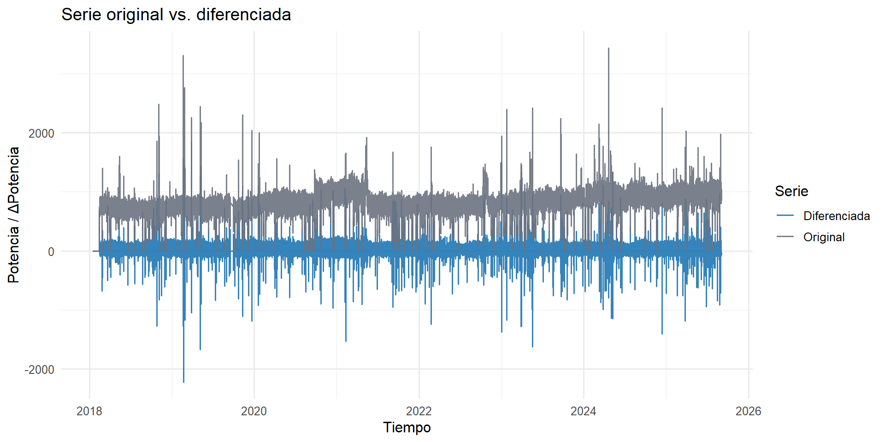
La serie diferenciada muestra valores centrados alrededor de cero, eliminando la tendencia de largo plazo.
La dispersión es más estable y simétrica, lo que indica que la varianza se ha homogenizado.
La diferenciación logró transformar la serie en estacionaria, condición necesaria para aplicar modelos como ARIMA.
Aún se observan algunos picos esporádicos (outliers) que podrían representar eventos atípicos o ruido extremo.
# ADF nuevamente si se diferenció
if (d_sugerido > 0) {
cat("\nRe-prueba ADF en la serie diferenciada (d =", d_sugerido, "):\n")
print(tseries::adf.test(serie_diff, k = 24))
}##
## Re-prueba ADF en la serie diferenciada (d = 1 ):##
## Augmented Dickey-Fuller Test
##
## data: serie_diff
## Dickey-Fuller = -91.466, Lag order = 24, p-value = 0.01
## alternative hypothesis: stationaryEl resultado de la Prueba ADF (Dickey-Fuller aumentada) para la serie diferenciada indica que p-value = 0.01 < 0.05, indicando que es una serie estacionaria.
La serie diferenciada (d = 1) cumple con el requisito de estacionariedad, condición indispensable para la modelación ARIMA.
No se requieren más diferenciaciones.
5.2.4 ACF y PACF (original y diferenciada)
# ============================================================
# 6. ACF y PACF (original y diferenciada)
# ============================================================
# --- Calcular ACF/PACF de la serie original ---
t0 <- Sys.time()
acf_obj <- try(acf(serie_vec, lag.max = lag_max, plot = FALSE), silent = TRUE)
pacf_obj <- try(pacf(serie_vec, lag.max = lag_max, plot = FALSE), silent = TRUE)
.timing[["ACF/PACF (original)"]] <- list(seconds = as.numeric(difftime(Sys.time(), t0, units = "secs")),
status = if (inherits(acf_obj, "try-error")) "ERROR" else "OK",
message = NA_character_)
# --- Graficar ACF/PACF de la serie original ---
if (!inherits(acf_obj, "try-error") && !inherits(pacf_obj, "try-error")) {
acf_df <- data.frame(lag = as.numeric(acf_obj$lag), acf = as.numeric(acf_obj$acf))
pacf_df <- data.frame(lag = as.numeric(pacf_obj$lag), pacf = as.numeric(pacf_obj$acf))
ci <- 1.96 / sqrt(length(serie_vec))
p1 <- ggplot(acf_df, aes(lag, acf)) +
geom_col(fill = "#1f77b4") +
geom_hline(yintercept = c(-ci, ci), linetype="dashed", color="red") +
labs(title = "ACF (serie original)", x = "Rezago (horas)", y = "ACF") +
theme_minimal()
p2 <- ggplot(pacf_df, aes(lag, pacf)) +
geom_col(fill = "#ff7f0e") +
geom_hline(yintercept = c(-ci, ci), linetype="dashed", color="red") +
labs(title = "PACF (serie original)", x = "Rezago (horas)", y = "PACF") +
theme_minimal()
print(p1); print(p2)
} else {
cat("Error al calcular ACF/PACF de la serie original.\n")
} 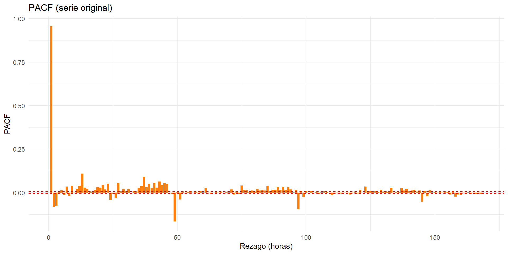
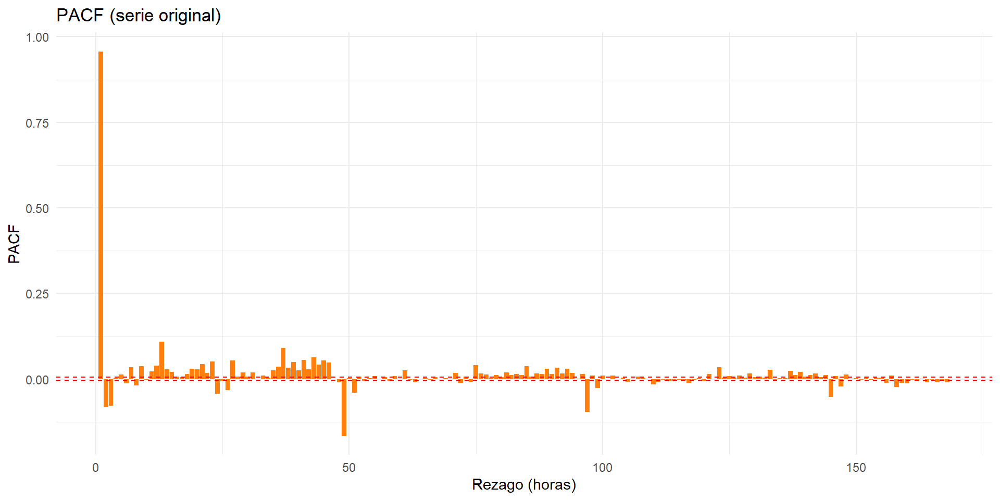
# --- Serie diferenciada ---
if (exists("serie_diff") && length(serie_diff) > 10 && !identical(serie_diff, serie_vec)) {
t0 <- Sys.time()
acf_d <- try(acf(serie_diff, lag.max = lag_max, plot = FALSE), silent = TRUE)
pacf_d <- try(pacf(serie_diff, lag.max = lag_max, plot = FALSE), silent = TRUE)
.timing[["ACF/PACF (diferenciada)"]] <- list(seconds = as.numeric(difftime(Sys.time(), t0, units = "secs")),
status = if (inherits(acf_d, "try-error")) "ERROR" else "OK",
message = NA_character_)
if (!inherits(acf_d, "try-error") && !inherits(pacf_d, "try-error")) {
acf_df_d <- data.frame(lag = as.numeric(acf_d$lag), acf = as.numeric(acf_d$acf))
pacf_df_d <- data.frame(lag = as.numeric(pacf_d$lag), pacf = as.numeric(pacf_d$acf))
ci_d <- 1.96 / sqrt(length(serie_diff))
p3 <- ggplot(acf_df_d, aes(lag, acf)) +
geom_col(fill = "#17becf") +
geom_hline(yintercept = c(-ci_d, ci_d), linetype="dashed", color="red") +
labs(title = "ACF (serie diferenciada)", x = "Rezago (horas)", y = "ACF") +
theme_minimal()
p4 <- ggplot(pacf_df_d, aes(lag, pacf)) +
geom_col(fill = "#2ca02c") +
geom_hline(yintercept = c(-ci_d, ci_d), linetype="dashed", color="red") +
labs(title = "PACF (serie diferenciada)", x = "Rezago (horas)", y = "PACF") +
theme_minimal()
print(p3); print(p4)
} else {
cat("Error al calcular ACF/PACF diferenciada.\n")
}
}

La ACF de la serie original presenta una decadencia lenta y oscilante, sin cortar bruscamente, lo que indica que la serie no es estacionaria. Se observan picos significativos en rezagos cercanos a 24, 48, 72, 96 y 120 horas (múltiplos de 24), lo cual sugiere una estacionalidad diaria (ciclos de 24 h). El patrón sinusoidal de la ACF evidencia repetición de ciclos de comportamiento, probablemente relacionados con el uso o generación de potencia a lo largo del día.
La PACF de la serie original muestra un pico muy fuerte en el primer rezago (lag 1) y luego decae rápidamente a valores cercanos a cer, esto indica alta autocorrelación inmediata, es decir, el valor actual depende fuertemente del valor anterior. El resto de los rezagos no son significativos, lo que refuerza la presencia de una tendencia o componente autorregresiva dominante.
La serie original no es estacionaria, presenta tendencia y una fuerte estacionalidad diaria. Esto confirma la necesidad de diferenciar la serie antes del modelado ARIMA.
La ACF de la serie diferenciada muestra que los valores caen a cero rápidamente, salvo en algunos rezagos aislados. La pérdida de la estructura oscilante confirma que la tendencia fue eliminada y que la serie se ha vuelto más estacionaria. Persisten algunos picos moderados en múltiplos de 24 horas, indicando que aún hay componente estacional residual (ciclo diario).
En la PACF de la serie diferenciada muestra solo unos pocos rezagos significativos (lag 1 y algunos alrededor de 24), suguiriendo que podría haber un componente AR de bajo orden (p ≈ 1) y posiblemente un componente estacional AR o MA en los múltiplos de 24.
La diferenciación logró estacionarizar la serie, eliminando la tendencia.
5.2.5 Descomposición STL (Seasonal-Trend decomposition using Loess) y MSTL (Multiple Seasonal-Trend decomposition using Loess)
val_col <- if ("val_impu" %in% names(df_impu)) "val_impu" else
if ("VALOR_IMPUTADO" %in% names(df_impu)) "VALOR_IMPUTADO" else
stop("No encuentro columna de valores: usa 'val_impu' o 'VALOR_IMPUTADO'.")
# Utilidad para detectar columna estacional por periodo (acepta 'Seasonal-24', 'Seasonal 24', etc.)
find_seasonal_col <- function(df_comp, target_period) {
nm <- names(df_comp)
is_seas <- grepl("^Seasonal", nm, ignore.case = TRUE)
if (!any(is_seas)) return(NULL)
seas_nm <- nm[is_seas]
getp <- function(s) { p <- gsub("[^0-9]", "", s); if (nzchar(p)) as.integer(p) else NA_integer_ }
periods <- vapply(seas_nm, getp, integer(1))
idx <- which(periods == target_period)
if (length(idx)) seas_nm[idx[1]] else NULL
}
# ========== A) df_seas24: Estacionalidad diaria (24h) desde SERIE HORARIA ==========
x_hour <- as.numeric(df_impu[[val_col]])
time_hr <- as.POSIXct(df_impu[[time_col]])
stopifnot(length(x_hour) >= 24*14) # al menos ~2 semanas
ts_hour <- forecast::msts(x_hour, seasonal.periods = c(24, 168))
fit_m_hour <- forecast::mstl(ts_hour, robust = TRUE)
comp_h <- as.data.frame(fit_m_hour)
col_s24 <- find_seasonal_col(comp_h, 24)
if (is.null(col_s24)) {
# fallback: primera 'Seasonal' si no se pudo detectar 24 específicamente
cand <- grep("^Seasonal", names(comp_h), ignore.case = TRUE, value = TRUE)
col_s24 <- cand[1]
}
df_seas24 <- tibble(
time = time_hr,
Componente = "Estacionalidad diaria (24h)",
Valor = comp_h[[col_s24]]
)
# ========== B) df_seas12: Estacionalidad mensual (12) desde SERIE MENSUAL ==========
monthly <- df_impu %>%
mutate(mes = floor_date(.data[[time_col]], "month")) %>%
summarise(.by = mes, y = mean(.data[[val_col]], na.rm = TRUE)) %>%
arrange(mes)
stopifnot(nrow(monthly) >= 24)
ts_month <- stats::ts(
monthly$y, frequency = 12,
start = c(year(min(monthly$mes)), month(min(monthly$mes)))
)
fit_stl_m <- stats::stl(ts_month, s.window = "periodic", robust = TRUE)
comp_m <- as.data.frame(fit_stl_m$time.series)
# detectar columna estacional (nombre puede ser "seasonal"/"Seasonal")
seas_col_m <- names(comp_m)[grepl("season", names(comp_m), ignore.case = TRUE)][1]
if (is.na(seas_col_m)) stop("No se encontró columna estacional en STL mensual.")
df_seas12 <- tibble(
time = as.POSIXct(monthly$mes), # unificamos a POSIXct
Componente = "Estacionalidad mensual (12)",
Valor = comp_m[[seas_col_m]]
)
# ========== C) df_day_panel: Observada, Tendencia, Semanal(7d), Anual(365d), Residuo (SERIE DIARIA) ==========
daily <- df_impu %>%
mutate(day = floor_date(.data[[time_col]], "day")) %>%
summarise(.by = day, y = mean(.data[[val_col]], na.rm = TRUE)) %>%
arrange(day)
ts_day <- forecast::msts(daily$y, seasonal.periods = c(7, 365))
fit_m_day <- forecast::mstl(ts_day, robust = TRUE)
comp_d <- as.data.frame(fit_m_day)
# Normalizamos nombres para 'Trend' y 'Remainder'
nmd <- names(comp_d)
nmd <- sub("^trend$", "Trend", nmd, ignore.case = TRUE)
nmd <- sub("^remainder$", "Remainder", nmd, ignore.case = TRUE)
names(comp_d) <- nmd
# Detectar columnas estacionales 7 y 365
is_seas <- grepl("^Seasonal", names(comp_d), ignore.case = TRUE)
seas_nms <- names(comp_d)[is_seas]
getp <- function(s) { p <- gsub("[^0-9]", "", s); if (nzchar(p)) as.integer(p) else NA_integer_ }
seas_p <- vapply(seas_nms, getp, integer(1))
idx7 <- which(seas_p == 7)
idx365 <- which(seas_p == 365)
seas7 <- if (length(idx7)) comp_d[[seas_nms[idx7[1]]]] else NULL
seas365 <- if (length(idx365)) comp_d[[seas_nms[idx365[1]]]] else NULL
df_day_panel <- tibble(
time = as.POSIXct(daily$day),
Observada = daily$y,
Tendencia = if ("Trend" %in% names(comp_d)) comp_d$Trend else NA_real_,
Residuo = if ("Remainder" %in% names(comp_d)) comp_d$Remainder else NA_real_
)
if (!is.null(seas7)) df_day_panel[["Estacionalidad semanal (7d)"]] <- seas7
if (!is.null(seas365)) df_day_panel[["Estacionalidad anual (365d)"]] <- seas365
df_day_panel <- df_day_panel |>
pivot_longer(-time, names_to = "Componente", values_to = "Valor")
# ========== D) Panel combinado ==========
panel_all <- bind_rows(
df_day_panel, # Observada/Tendencia/Residuo + 7d/365d si existen
df_seas24, # Estacionalidad diaria (24h) desde HORAS
df_seas12 # Estacionalidad mensual (12) desde MESES
) %>%
mutate(
Componente = factor(
Componente,
levels = c("Observada", "Tendencia",
"Estacionalidad diaria (24h)",
"Estacionalidad semanal (7d)",
"Estacionalidad mensual (12)",
"Estacionalidad anual (365d)",
"Residuo")
)
)
# ========== E) Gráfico ==========
ggplot(panel_all, aes(x = time, y = Valor)) +
geom_line(linewidth = 0.45, alpha = 0.95, na.rm = TRUE) +
facet_wrap(~ Componente, ncol = 1, scales = "free_y", drop = FALSE) +
scale_x_datetime(date_breaks = "6 months", date_labels = "%b-%Y") +
guides(x = guide_axis(n.dodge = 2)) +
labs(
title = "Descomposición combinada de la serie completa",
subtitle = "Tendencia + Estacionalidades diaria (24h), semanal (7d), mensual (12) y anual (365d) + Residuo",
x = "Tiempo", y = "Valor"
) +
theme_minimal(base_size = 12) +
theme(plot.title = element_text(face = "bold"),
panel.grid.minor = element_blank())
- La descomposición evidencia que la serie de potencia es altamente estructurada, con una tendencia creciente de largo plazo, ciclos estacionales fuertes en las escalas diaria y semanal, modulaciones mensuales y anuales de menor intensidad y un residuo controlado, con algunos eventos atípicos aislados.
5.2.6 Promedios móviles (24h, 168h, 720h)
df_ma <- tibble::tibble(
time = as.POSIXct(df_impu[[time_col]]),
Original = as.numeric(df_impu$val_impu),
MA_24 = as.numeric(zoo::rollmean(df_impu$val_impu, 24, align = "right", fill = NA)),
MA_168 = as.numeric(zoo::rollmean(df_impu$val_impu, 168, align = "right", fill = NA)),
MA_720 = as.numeric(zoo::rollmean(df_impu$val_impu, 720, align = "right", fill = NA))
)
ggplot(df_ma, aes(x = time)) +
geom_line(aes(y = Original), color = "grey70", linewidth = 0.3, alpha = 0.6, na.rm = TRUE) +
# Halo para la verde
geom_line(aes(y = MA_168), color = "white", linewidth = 1.8, alpha = 0.9, na.rm = TRUE) +
# Mapear color con etiquetas literales -> leyenda
geom_line(aes(y = MA_24, color = "MA 24h"), linewidth = 1.0, alpha = 0.95, na.rm = TRUE) +
geom_line(aes(y = MA_168, color = "MA 168h"), linewidth = 1.0, alpha = 1.00, na.rm = TRUE) +
geom_line(aes(y = MA_720, color = "MA 720h"), linewidth = 1.0, alpha = 0.95, na.rm = TRUE) +
scale_color_manual(
values = c("MA 24h" = "#1f77b4",
"MA 168h" = "#00B050",
"MA 720h" = "#D62728"),
name = "Serie",
breaks = c("MA 24h", "MA 168h", "MA 720h"),
labels = c("MA 24h (1 día)", "MA 168h (1 semana)", "MA 720h (1 mes)")
) +
labs(title = "Promedios móviles (24h, 168h, 720h)",
x = "Tiempo", y = "Potencia") +
theme_minimal(base_size = 12) +
theme(plot.title = element_text(face = "bold"),
legend.position = "right",
panel.grid.minor = element_blank())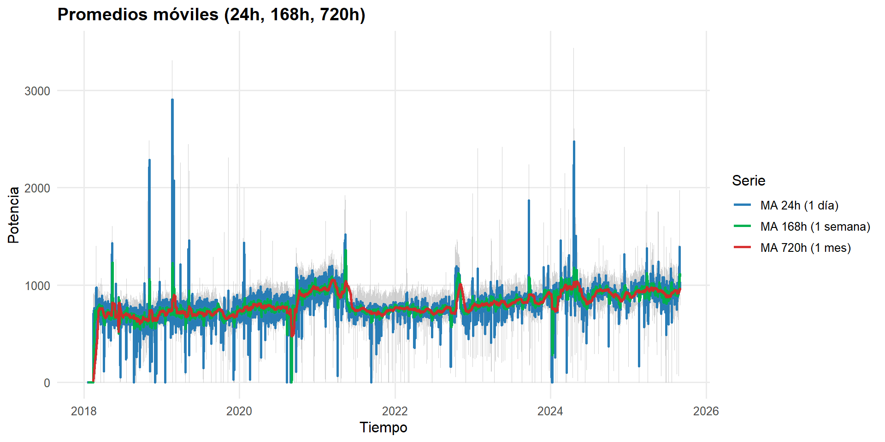
Las tres curvas muestran consistencia ascendente: la serie tiende a crecer lentamente con el tiempo.
Las diferencias de amplitud entre los promedios móviles demuestran que la serie presenta alta volatilidad horaria, pero un comportamiento más estable a mediano y largo plazo.
Los picos muy marcados, especialmente entre 2019 y 2024, pueden deberse a eventos excepcionales o registros atípicos, sin afectar la tendencia general.
El análisis de promedios móviles evidencia una serie con fuerte variabilidad de corto plazo, pero con una tendencia creciente sostenida en el largo plazo.
5.2.7 Selección del modelo eficiente (auto.arima) y Pronóstico
tm("Ajuste SARIMA + Pronóstico", {
y_fit <<- ts(serie_vec, frequency = 24)
m_auto <<- forecast::auto.arima(
y_fit,
d = d_sugerido,
seasonal = TRUE,
stepwise = TRUE,
approximation = arima_approx,
max.p = 5, max.q = 5, max.P = 2, max.Q = 2
)
print(m_auto)
h_days <<- horizon_days
h <<- 24 * h_days
fc <<- forecast::forecast(m_auto, h = h)
print(autoplot(fc) + labs(title = paste0("Pronóstico SARIMA (", h_days, " días)"),
x = "Tiempo", y = "Potencia"))
})## Series: y_fit
## ARIMA(1,1,1)(2,0,1)[24] with drift
##
## Coefficients:
## ar1 ma1 sar1 sar2 sma1 drift
## 0.3106 -0.2732 0.5660 0.1735 -0.5697 0.0069
## s.e. 0.0315 0.0319 0.0197 0.0047 0.0205 0.2816
##
## sigma^2 = 3105: log likelihood = -645389
## AIC=1290792 AICc=1290792 BIC=1290860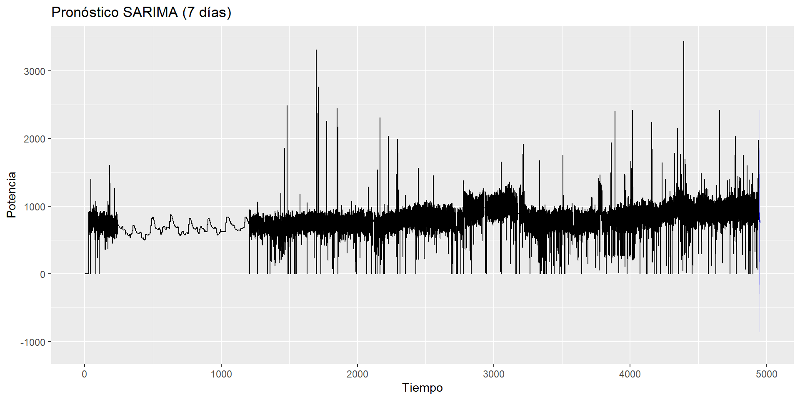
5.2.7.1 Zoom al pronóstico del modelo eficiente (auto.arima)
# ==== ZOOM FINAL AL PRONÓSTICO ====
history_days <- 21
h_days <- horizon_days %||% 7
hist_df <- tibble(
time = as.POSIXct(df_impu[[time_col]], tz = TZ),
y = as.numeric(df_impu$val_impu)
)
t_max <- max(hist_df$time, na.rm = TRUE)
h <- length(fc$mean)
f_times <- seq(from = t_max + hours(1), by = "1 hour", length.out = h)
fc_df <- tibble(
time = f_times,
mean = as.numeric(fc$mean),
lo80 = as.numeric(fc$lower[,"80%"]),
hi80 = as.numeric(fc$upper[,"80%"]),
lo95 = as.numeric(fc$lower[,"95%"]),
hi95 = as.numeric(fc$upper[,"95%"])
)
t_ini <- t_max - days(history_days)
t_fin <- max(fc_df$time)
hist_zoom <- dplyr::filter(hist_df, time >= t_ini)
ggplot() +
geom_ribbon(data = fc_df, aes(x = time, ymin = lo95, ymax = hi95),
fill = "#1f77b4", alpha = 0.15, na.rm = TRUE) +
geom_ribbon(data = fc_df, aes(x = time, ymin = lo80, ymax = hi80),
fill = "#1f77b4", alpha = 0.25, na.rm = TRUE) +
geom_line(data = fc_df, aes(x = time, y = mean),
color = "#1f77b4", linewidth = 1.0, na.rm = TRUE) +
geom_line(data = hist_zoom, aes(x = time, y = y),
color = "grey40", linewidth = 0.4, na.rm = TRUE) +
scale_x_datetime(limits = c(t_ini, t_fin),
date_breaks = "3 days", # ← espaciado más grande
date_labels = "%d-%b") + # ← formato sin hora
coord_cartesian(ylim = c(0, 2000)) + # recorta sin descartar filas
labs(title = paste0("Pronóstico SARIMA (", h_days, " días)"),
subtitle = paste0("Últimos ", history_days, " días de historia + predicción"),
x = "Tiempo", y = "Potencia") +
theme_minimal(base_size = 12) +
theme(
plot.title = element_text(face = "bold"),
panel.grid.minor = element_blank(),
axis.text.x = element_text(angle = 45, hjust = 1) # ← evita solapamiento
)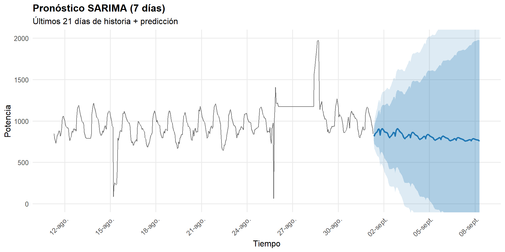
El modelo captura una estructura diaria muy fuerte y una persistencia corta; la tendencia ya fue removida con d = 1; el “drift” es irrelevante.
En la gráfica general el pronóstico es casi invisible por el rango y la alta variabilidad histórica (picos/outliers).
En la gráfica de pronóstico, la línea azul se mantiene alrededor de 850–950 (un nivel cercano al observado justo antes del corte), con ondulación diaria y ciclos de 24 h.
El SARIMA escogido capta el patrón diario y da una proyección estable a 7 días, pero la incertidumbre es alta por la variabilidad de la serie.
Las bandas amplias avisan que, en escala original, la serie es muy heterocedástica y contiene outliers.
5.2.8 Puntos de cambio y visualización
daily <- df_impu %>%
mutate(day = floor_date(.data[[time_col]], "day")) %>%
group_by(day) %>% summarise(y = mean(val_impu), .groups = "drop")
tm("Changepoint", {
cp <<- cpt.mean(daily$y, method = "PELT", penalty = "SIC")
})
head (cp@cpts,100) # índices de cambio## [1] 29 30 31 33 34 35 36 37 38 39 40 41 42 43 44 45 46 47
## [19] 48 49 50 51 52 53 54 55 57 58 59 60 61 62 63 64 66 67
## [37] 68 69 70 71 72 73 74 75 76 77 79 80 81 82 83 84 85 86
## [55] 87 88 89 90 91 92 93 94 95 97 98 99 100 101 102 103 104 105
## [73] 106 107 109 110 111 112 113 114 115 116 117 118 119 120 121 123 124 125
## [91] 126 127 128 129 130 131 132 134 136 137# Overlay en la curva diaria
ggplot(daily, aes(day, y)) +
geom_line() +
geom_vline(xintercept = daily$day[cp@cpts], linetype = "dashed", color = "red") +
labs(title = "Media diaria con puntos de cambio (cpt.mean)",
x = "Día", y = "Potencia media diaria") +
theme_minimal()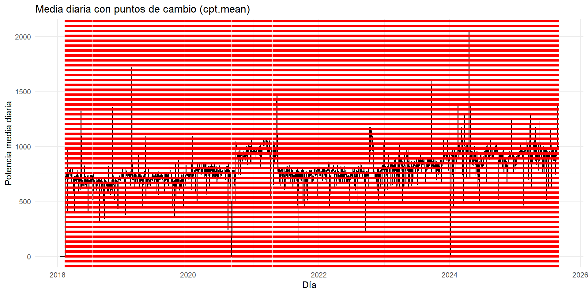
Líneas rojas horizontales indican los puntos de cambio detectados en la media de la serie. Cada uno de ellos marca un momento en el que el nivel promedio de la potencia cambió de manera estadísticamente significativa.
Se observa en la gráfica:
Alta frecuencia de puntos de cambio (bandas rojas), sugiriendo que la serie es altamente inestable o no estacionaria a lo largo del tiempo.
Cambios localizados por períodos, entre 2018 y 2020, la serie muestra mayor variabilidad y frecuentes saltos reflejando volátilidad o errores de registro. Entre 2021 y 2024, los cambios son menos abruptos, aunque todavía se observan alteraciones cíclicas en los promedios diarios. Entre 2024–2025, la media parece estabilizarse en un rango más constante, pero aún con picos esporádicos (outliers).
La media diaria parece mostrar una tendencia leve al alza, con algunos descensos temporales; los puntos de cambio ayudan a identificar momentos clave donde la serie cambió de nivel promedio.
La gráfica evidencia que la potencia media diaria ha experimentado múltiples rupturas estructurales en su comportamiento a lo largo de los años. Estas discontinuidades confirman que la serie no es estacionaria en media y requiere preprocesamiento o modelado segmentado.
5.2.9 Outliers y verificación de supuestos del ARIMA
# Outliers
to <- tryCatch(forecast::tsoutliers(ts(serie_vec, frequency = 24)), error = function(e) NULL)
if (!is.null(to)) {
#print(to)
idx <- to$index
df_ol <- tibble(time = as.POSIXct(df_impu[[time_col]])[idx],
y = serie_vec[idx])
ggplot(tibble(time = as.POSIXct(df_impu[[time_col]]), y = serie_vec), aes(time, y)) +
geom_line(alpha = 0.6) +
geom_point(data = df_ol, aes(time, y), color = "red", size = 1.4) +
labs(title = "Outliers detectados (forecast::tsoutliers)",
x = "Tiempo", y = "Potencia") +
theme_minimal()
}
- La gráfica revela que la serie de potencia presenta numerosos valores atípicos, distribuidos a lo largo de todo el periodo y de ambos signos. Esto confirma que la serie es altamente irregular y heterocedástica, por lo que requiere una etapa robusta de limpieza y preprocesamiento antes de aplicar cualquier modelo predictivo.
# Supuestos del modelo ARIMA (residuales)
checkresiduals(m_auto) # ACF de residuales, Ljung-Box, histograma, qq-plot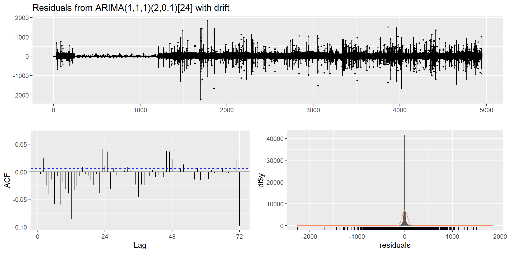
##
## Ljung-Box test
##
## data: Residuals from ARIMA(1,1,1)(2,0,1)[24] with drift
## Q* = 4269.1, df = 43, p-value < 2.2e-16
##
## Model df: 5. Total lags used: 48Ljung-Box test
- p-value < 2.2e-16, se rechaza H₀ (los residuos son ruido blanco), los residuos aún tienen correlación significativa.
Diagnósticos residuales del modelo ARIMA
Los residuos oscilan alrededor de 0, sin embargo, hay picos grandes (±2000), lo que sugiere valores atípicos o episodios de alta volatilidad no explicados por el modelo. La amplitud es variable (heterocedasticidad leve).
ACF (Función de Autocorrelación de los residuos), los residuos aún presentan correlación, el modelo no captura por completo la estructura temporal. Las barras deben estar dentro de las bandas azules.
Histograma y densidad de los residuos, es muy concentrado en torno a 0, pero con colas largas y picos extremos, indicando distribución leptocúrtica (no normal).
Los residuos no son normales, lo que afecta la validez de los intervalos de predicción si se asume normalidad.
El modelo no cumple totalmente los supuestos de ruido blanco, aunque capta bien la tendencia general, persisten correlaciones estacionales y algunos outliers o periodos anómalos.
5.2.10 Transformación logarítmica para estabilizar la varianza
# ============================================================
# Transformación logarítmica de la serie de potencia
# ============================================================
# Evitar log(0) o negativos
df_log <- df_impu %>%
mutate(val_log = log1p(val_impu)) # log(1 + x) evita infinitos
# Crear serie temporal log-transformada
ts_log <- ts(df_log$val_log, frequency = 24) # frecuencia diaria (24 horas)
# Visualización básica
autoplot(ts_log) +
labs(title = "Serie transformada logarítmicamente (log1p)",
y = "log(1 + Potencia)", x = "Tiempo") +
theme_minimal()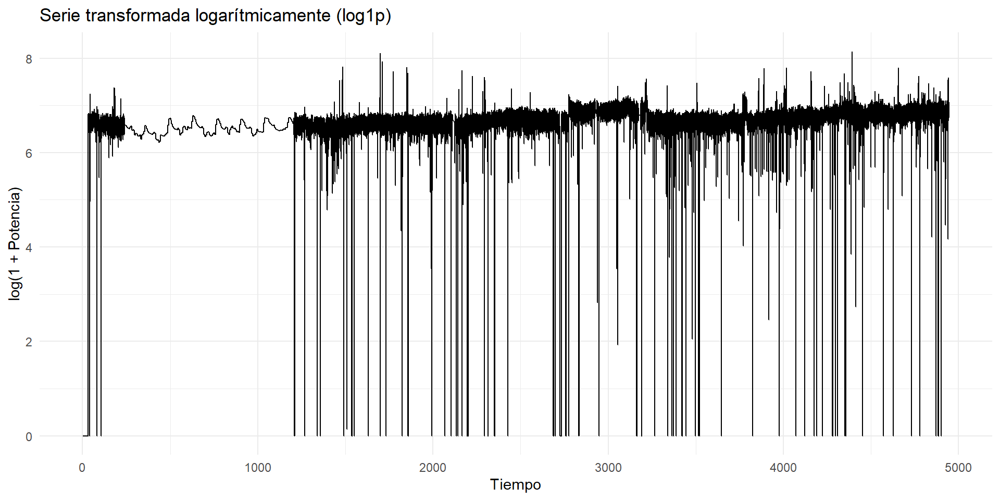
La transformación logarítmica logró reducir la variabilidad y estabilizar la escala de la serie, mejorando su comportamiento estadístico. Sin embargo, persisten caídas bruscas que deben tratarse (por imputación o filtrado).
La serie transformada es más regular y apta para modelado estadístico, pero sigue reflejando irregularidades de medición o interrupciones que conviene revisar antes de la predicción final.
La serie log-transformada presenta una varianza más controlada, conserva la estructura temporal esencial y mitiga la influencia de outliers.
5.2.11 Ajuste del modelo ARIMA en escala logarítmica
# ============================================================
# Ajuste automático ARIMA sobre serie log-transformada
# ============================================================
tm("Ajuste SARIMA TS log-transformada", {
m_log <<- auto.arima(ts_log,
seasonal = TRUE,
stepwise = FALSE,
approximation = arima_approx,
trace = TRUE)
summary(m_log)
})##
## Fitting models using approximations to speed things up...
##
## ARIMA(0,1,0) : -24007.62
## ARIMA(0,1,0) with drift : -24005.63
## ARIMA(0,1,0)(0,0,1)[24] : -24049.82
## ARIMA(0,1,0)(0,0,1)[24] with drift : -24047.82
## ARIMA(0,1,0)(0,0,2)[24] : -24115.74
## ARIMA(0,1,0)(0,0,2)[24] with drift : -24113.74
## ARIMA(0,1,0)(1,0,0)[24] : -24027.94
## ARIMA(0,1,0)(1,0,0)[24] with drift : -24025.95
## ARIMA(0,1,0)(1,0,1)[24] : Inf
## ARIMA(0,1,0)(1,0,1)[24] with drift : Inf
## ARIMA(0,1,0)(1,0,2)[24] : Inf
## ARIMA(0,1,0)(1,0,2)[24] with drift : Inf
## ARIMA(0,1,0)(2,0,0)[24] : -24068.68
## ARIMA(0,1,0)(2,0,0)[24] with drift : -24066.69
## ARIMA(0,1,0)(2,0,1)[24] : Inf
## ARIMA(0,1,0)(2,0,1)[24] with drift : Inf
## ARIMA(0,1,0)(2,0,2)[24] : Inf
## ARIMA(0,1,0)(2,0,2)[24] with drift : Inf
## ARIMA(0,1,1) : -24077
## ARIMA(0,1,1) with drift : -24075.01
## ARIMA(0,1,1)(0,0,1)[24] : -24120.59
## ARIMA(0,1,1)(0,0,1)[24] with drift : -24118.6
## ARIMA(0,1,1)(0,0,2)[24] : -24185.2
## ARIMA(0,1,1)(0,0,2)[24] with drift : -24183.21
## ARIMA(0,1,1)(1,0,0)[24] : -24098.76
## ARIMA(0,1,1)(1,0,0)[24] with drift : -24096.77
## ARIMA(0,1,1)(1,0,1)[24] : Inf
## ARIMA(0,1,1)(1,0,1)[24] with drift : Inf
## ARIMA(0,1,1)(1,0,2)[24] : Inf
## ARIMA(0,1,1)(1,0,2)[24] with drift : Inf
## ARIMA(0,1,1)(2,0,0)[24] : -24138.11
## ARIMA(0,1,1)(2,0,0)[24] with drift : -24136.12
## ARIMA(0,1,1)(2,0,1)[24] : Inf
## ARIMA(0,1,1)(2,0,1)[24] with drift : Inf
## ARIMA(0,1,1)(2,0,2)[24] : Inf
## ARIMA(0,1,1)(2,0,2)[24] with drift : Inf
## ARIMA(0,1,2) : -24111
## ARIMA(0,1,2) with drift : -24109
## ARIMA(0,1,2)(0,0,1)[24] : -24157.22
## ARIMA(0,1,2)(0,0,1)[24] with drift : -24155.23
## ARIMA(0,1,2)(0,0,2)[24] : -24225.37
## ARIMA(0,1,2)(0,0,2)[24] with drift : -24223.37
## ARIMA(0,1,2)(1,0,0)[24] : -24135.58
## ARIMA(0,1,2)(1,0,0)[24] with drift : -24133.59
## ARIMA(0,1,2)(1,0,1)[24] : Inf
## ARIMA(0,1,2)(1,0,1)[24] with drift : Inf
## ARIMA(0,1,2)(1,0,2)[24] : Inf
## ARIMA(0,1,2)(1,0,2)[24] with drift : Inf
## ARIMA(0,1,2)(2,0,0)[24] : -24178.38
## ARIMA(0,1,2)(2,0,0)[24] with drift : -24176.39
## ARIMA(0,1,2)(2,0,1)[24] : Inf
## ARIMA(0,1,2)(2,0,1)[24] with drift : Inf
## ARIMA(0,1,3) : -24243.98
## ARIMA(0,1,3) with drift : -24241.99
## ARIMA(0,1,3)(0,0,1)[24] : -24290.47
## ARIMA(0,1,3)(0,0,1)[24] with drift : -24288.48
## ARIMA(0,1,3)(0,0,2)[24] : -24358.36
## ARIMA(0,1,3)(0,0,2)[24] with drift : -24356.37
## ARIMA(0,1,3)(1,0,0)[24] : -24268.83
## ARIMA(0,1,3)(1,0,0)[24] with drift : -24266.84
## ARIMA(0,1,3)(1,0,1)[24] : Inf
## ARIMA(0,1,3)(1,0,1)[24] with drift : Inf
## ARIMA(0,1,3)(2,0,0)[24] : -24311.37
## ARIMA(0,1,3)(2,0,0)[24] with drift : -24309.38
## ARIMA(0,1,4) : -24977.57
## ARIMA(0,1,4) with drift : -24975.58
## ARIMA(0,1,4)(0,0,1)[24] : -25041.9
## ARIMA(0,1,4)(0,0,1)[24] with drift : -25039.92
## ARIMA(0,1,4)(1,0,0)[24] : -25021.29
## ARIMA(0,1,4)(1,0,0)[24] with drift : -25019.3
## ARIMA(0,1,5) : -25118.13
## ARIMA(0,1,5) with drift : -25116.14
## ARIMA(1,1,0) : -24073.54
## ARIMA(1,1,0) with drift : -24071.55
## ARIMA(1,1,0)(0,0,1)[24] : -24117.01
## ARIMA(1,1,0)(0,0,1)[24] with drift : -24115.01
## ARIMA(1,1,0)(0,0,2)[24] : -24181.56
## ARIMA(1,1,0)(0,0,2)[24] with drift : -24179.57
## ARIMA(1,1,0)(1,0,0)[24] : -24095.17
## ARIMA(1,1,0)(1,0,0)[24] with drift : -24093.18
## ARIMA(1,1,0)(1,0,1)[24] : Inf
## ARIMA(1,1,0)(1,0,1)[24] with drift : Inf
## ARIMA(1,1,0)(1,0,2)[24] : Inf
## ARIMA(1,1,0)(1,0,2)[24] with drift : Inf
## ARIMA(1,1,0)(2,0,0)[24] : -24134.47
## ARIMA(1,1,0)(2,0,0)[24] with drift : -24132.48
## ARIMA(1,1,0)(2,0,1)[24] : Inf
## ARIMA(1,1,0)(2,0,1)[24] with drift : Inf
## ARIMA(1,1,0)(2,0,2)[24] : Inf
## ARIMA(1,1,0)(2,0,2)[24] with drift : Inf
## ARIMA(1,1,1) : -24087.78
## ARIMA(1,1,1) with drift : -24338.51
## ARIMA(1,1,1)(0,0,1)[24] : -24131.77
## ARIMA(1,1,1)(0,0,1)[24] with drift : -24369.11
## ARIMA(1,1,1)(0,0,2)[24] : -24441.8
## ARIMA(1,1,1)(0,0,2)[24] with drift : -24439.81
## ARIMA(1,1,1)(1,0,0)[24] : -24348.78
## ARIMA(1,1,1)(1,0,0)[24] with drift : -24107.14
## ARIMA(1,1,1)(1,0,1)[24] : Inf
## ARIMA(1,1,1)(1,0,1)[24] with drift : Inf
## ARIMA(1,1,1)(1,0,2)[24] : Inf
## ARIMA(1,1,1)(1,0,2)[24] with drift : Inf
## ARIMA(1,1,1)(2,0,0)[24] : -24395.2
## ARIMA(1,1,1)(2,0,0)[24] with drift : -24393.21
## ARIMA(1,1,1)(2,0,1)[24] : Inf
## ARIMA(1,1,1)(2,0,1)[24] with drift : Inf
## ARIMA(1,1,2) : -27833.16
## ARIMA(1,1,2) with drift : -27831.51
## ARIMA(1,1,2)(0,0,1)[24] : -27855.34
## ARIMA(1,1,2)(0,0,1)[24] with drift : -27853.67
## ARIMA(1,1,2)(0,0,2)[24] : -27931.72
## ARIMA(1,1,2)(0,0,2)[24] with drift : -27930.08
## ARIMA(1,1,2)(1,0,0)[24] : -27832.62
## ARIMA(1,1,2)(1,0,0)[24] with drift : -27830.95
## ARIMA(1,1,2)(1,0,1)[24] : Inf
## ARIMA(1,1,2)(1,0,1)[24] with drift : Inf
## ARIMA(1,1,2)(2,0,0)[24] : -27885.64
## ARIMA(1,1,2)(2,0,0)[24] with drift : -27883.99
## ARIMA(1,1,3) : -27930.89
## ARIMA(1,1,3) with drift : -27929.2
## ARIMA(1,1,3)(0,0,1)[24] : -27951.36
## ARIMA(1,1,3)(0,0,1)[24] with drift : -27950.19
## ARIMA(1,1,3)(1,0,0)[24] : -27929.02
## ARIMA(1,1,3)(1,0,0)[24] with drift : -27927.34
## ARIMA(1,1,4) : -27971.44
## ARIMA(1,1,4) with drift : -27969.72
## ARIMA(2,1,0) : -24110.19
## ARIMA(2,1,0) with drift : -24108.2
## ARIMA(2,1,0)(0,0,1)[24] : -24156.26
## ARIMA(2,1,0)(0,0,1)[24] with drift : -24154.27
## ARIMA(2,1,0)(0,0,2)[24] : -24224.06
## ARIMA(2,1,0)(0,0,2)[24] with drift : -24222.07
## ARIMA(2,1,0)(1,0,0)[24] : -24134.6
## ARIMA(2,1,0)(1,0,0)[24] with drift : -24132.61
## ARIMA(2,1,0)(1,0,1)[24] : Inf
## ARIMA(2,1,0)(1,0,1)[24] with drift : Inf
## ARIMA(2,1,0)(1,0,2)[24] : Inf
## ARIMA(2,1,0)(1,0,2)[24] with drift : Inf
## ARIMA(2,1,0)(2,0,0)[24] : -24177.06
## ARIMA(2,1,0)(2,0,0)[24] with drift : -24175.07
## ARIMA(2,1,0)(2,0,1)[24] : Inf
## ARIMA(2,1,0)(2,0,1)[24] with drift : Inf
## ARIMA(2,1,1) : -27860.19
## ARIMA(2,1,1) with drift : -27858.51
## ARIMA(2,1,1)(0,0,1)[24] : -27882.52
## ARIMA(2,1,1)(0,0,1)[24] with drift : -27880.84
## ARIMA(2,1,1)(0,0,2)[24] : -27957.02
## ARIMA(2,1,1)(0,0,2)[24] with drift : -27955.35
## ARIMA(2,1,1)(1,0,0)[24] : -27859.79
## ARIMA(2,1,1)(1,0,0)[24] with drift : -27858.11
## ARIMA(2,1,1)(1,0,1)[24] : Inf
## ARIMA(2,1,1)(1,0,1)[24] with drift : Inf
## ARIMA(2,1,1)(2,0,0)[24] : -27910.86
## ARIMA(2,1,1)(2,0,0)[24] with drift : -27909.2
## ARIMA(2,1,2) : Inf
## ARIMA(2,1,2) with drift : Inf
## ARIMA(2,1,2)(0,0,1)[24] : -27959.77
## ARIMA(2,1,2)(0,0,1)[24] with drift : -27957.64
## ARIMA(2,1,2)(1,0,0)[24] : -27936.99
## ARIMA(2,1,2)(1,0,0)[24] with drift : -27932.55
## ARIMA(2,1,3) : -27941.17
## ARIMA(2,1,3) with drift : -27942.36
## ARIMA(3,1,0) : -24237.58
## ARIMA(3,1,0) with drift : -24235.58
## ARIMA(3,1,0)(0,0,1)[24] : -24283.51
## ARIMA(3,1,0)(0,0,1)[24] with drift : -24281.52
## ARIMA(3,1,0)(0,0,2)[24] : -24350.28
## ARIMA(3,1,0)(0,0,2)[24] with drift : -24348.29
## ARIMA(3,1,0)(1,0,0)[24] : -24261.83
## ARIMA(3,1,0)(1,0,0)[24] with drift : -24259.84
## ARIMA(3,1,0)(1,0,1)[24] : Inf
## ARIMA(3,1,0)(1,0,1)[24] with drift : Inf
## ARIMA(3,1,0)(2,0,0)[24] : -24303.26
## ARIMA(3,1,0)(2,0,0)[24] with drift : -24301.27
## ARIMA(3,1,1) : -27938.18
## ARIMA(3,1,1) with drift : -27936.48
## ARIMA(3,1,1)(0,0,1)[24] : -27959.55
## ARIMA(3,1,1)(0,0,1)[24] with drift : -27957.84
## ARIMA(3,1,1)(1,0,0)[24] : -27936.7
## ARIMA(3,1,1)(1,0,0)[24] with drift : -27934.99
## ARIMA(3,1,2) : -27940.85
## ARIMA(3,1,2) with drift : -27936.15
## ARIMA(4,1,0) : -24785.01
## ARIMA(4,1,0) with drift : -24783.02
## ARIMA(4,1,0)(0,0,1)[24] : -24842.02
## ARIMA(4,1,0)(0,0,1)[24] with drift : -24840.03
## ARIMA(4,1,0)(1,0,0)[24] : -24820.95
## ARIMA(4,1,0)(1,0,0)[24] with drift : -24818.96
## ARIMA(4,1,1) : -27951.79
## ARIMA(4,1,1) with drift : -27950.08
## ARIMA(5,1,0) : -24836.46
## ARIMA(5,1,0) with drift : -24834.47
##
## Now re-fitting the best model(s) without approximations...
##
##
##
##
## Best model: ARIMA(1,1,4)5.2.12 Verificación de supuestos del nuevo modelo ARIMA en escala logarítmica
# ============================================================
# Diagnóstico de los residuos del modelo ARIMA (log)
# ============================================================
checkresiduals(m_log)
##
## Ljung-Box test
##
## data: Residuals from ARIMA(1,1,4)
## Q* = 647.2, df = 43, p-value < 2.2e-16
##
## Model df: 5. Total lags used: 48Ljung-Box test
- El p-valor < 0.05, se rechaza la hipótesis nula (los residuos no son completamente ruido blanco). Esto sugiere que el modelo no captura toda la dinámica temporal, aún quedan patrones correlacionados sin explicar.
Diagnósticos residuales del modelo ARIMA
En el gráfico de residuales los residuos oscilan alrededor de cero, lo que es esperable para un modelo bien ajustado. Sin embargo, se observan picos frecuentes (positivos y negativos) que indican fluctuaciones abruptas en la varianza o la presencia de valores atípicos. Hay periodos donde la variabilidad de los residuos aumenta, lo que sugiere heterocedasticidad (la varianza no es constante en el tiempo).
El modelo logra eliminar la tendencia, pero no estabiliza completamente la varianza; aún hay ruido estructurado.
En el gráfico de ACF de los residuos la mayoría de los rezagos se mantienen dentro de las bandas azules de confianza, lo cual indica autocorrelación residual débil o casi nula. Sin embargo, algunos picos (alrededor de los rezagos 24 y 48) exceden ligeramente las bandas, lo que sugiere que todavía puede haber estructura estacional residual leve o dependencias menores no capturadas.
El modelo ARIMA(1,1,4) mejora la independencia de los residuos respecto a modelos anteriores, pero no elimina completamente la autocorrelación.
En el gráfico de densidad de residuos la forma general es centrada en cero. Sin embargo, se observan colas delgadas pero extendidas, lo que sugiere no normalidad. El pico muy concentrado en torno a 0 confirma que los errores pequeños son frecuentes, pero los grandes (positivos o negativos) aún aparecen ocasionalmente.
En general, se cumple parcialmente la normalidad, aunque la serie sigue afectada por outliers o por una distribución más leptocúrtica que la normal.
El modelo ARIMA(1,1,4) representa una mejora respecto a versiones más simples (captura parcialmente la dinámica temporal), pero aún no cumple plenamente los supuestos de ruido blanco y homocedasticidad.
5.2.13 Pronóstico con el modelo mejorado (escala logarítmica)
# ============================================================
# Pronóstico en escala logarítmica
# ============================================================
h <- 24 * horizon_days # pronóstico a 7 días (horas)
fc_log <- forecast(m_log, h = h)
autoplot(fc_log) +
labs(title = paste0("Pronóstico log-transformado con ARIMA (", horizon_days, " días)"),
y = "log(1 + Potencia)", x = "Tiempo") +
theme_minimal(base_size = 12)
Se observa que la mayor parte de la serie se mantiene entre valores logarítmicos de 6 a 7, pero hay muchas caídas bruscas hacia valores bajos (0–2). Esos saltos representan puntos donde la potencia real cayó casi a cero, y al aplicar la transformación logarítmica, visualmente se reducen las diferencias.
La serie sigue mostrando alta variabilidad y picos anómalos, aunque en menor medida que en la escala original. Esto sugiere que la varianza aún no está completamente estabilizada o que hay eventos atípicos muy fuertes.
5.2.13.1 Reconversión a escala original (exponencial inversa)
# ============================================================
# Transformar el pronóstico a escala original
# ============================================================
fc_exp <- expm1(fc_log$mean) # inversa de log1p
fc_exp80 <- expm1(fc_log$lower[,"80%"])
fc_exp95 <- expm1(fc_log$upper[,"95%"])
# Crear data frame para visualización
f_times <- seq(from = max(df_impu[[time_col]]) + lubridate::hours(1),
by = "1 hour", length.out = h)
fc_plot <- tibble(
time = f_times,
mean = fc_exp,
lo80 = fc_exp80,
hi80 = fc_exp95
)
# Graficar pronóstico en escala original
ggplot(fc_plot, aes(x = time, y = mean)) +
geom_ribbon(aes(ymin = lo80, ymax = hi80),
fill = "#1f77b4", alpha = 0.25) +
geom_line(color = "#1f77b4", linewidth = 1.1) +
labs(title = "Pronóstico ARIMA (log-transformado, 7 días)",
subtitle = "Transformación log(1 + x) revertida a escala original",
x = "Tiempo", y = "Potencia estimada") +
theme_minimal(base_size = 12)
La línea azul muestra el pronóstico esperado: prácticamente plano y ligeramente creciente. Las bandas de confianza son amplias, lo cual significa alta incertidumbre en las predicciones.
El modelo ARIMA no logra capturar del todo la estacionalidad o los cambios estructurales. Existen valores extremos en la serie original. En este caso, el modelo está promediando el comportamiento reciente, sin detectar tendencia fuerte ni patrón estacional marcado, por eso proyecta una línea casi recta.
La transformación logarítmica ayudó a suavizar la serie, pero aún hay alta volatilidad.
El modelo ARIMA produce pronósticos conservadores (casi planos) cuando no detecta tendencia o ciclo claro.
Las bandas amplias muestran que el modelo no confía demasiado en su predicción a 7 días, posiblemente por residuos no estacionarios o valores atípicos persistentes.
5.3 Preprocesamiento de la serie de datos para Holt–Winters
Para la aplicación de Holt–Winter se imputa faltantes, detecta/sustituye outliers y estabiliza la varianza (Box–Cox con inversa guardada)
# ============================================================
# Preprocesamiento para Holt–Winters:
# - Regulariza a malla horaria (si no existe)
# - Imputa NAs
# - Detecta y sustituye outliers
# - Estabiliza varianza con Box–Cox (guarda lambda e inversa)
# Expone: ts_hw_full (limpia, positiva), y_hw_bc, lambda_hw, inv_boxcox()
# ============================================================
# 0) Cronometría
t0 <- Sys.time()
# 1) Asegurar malla horaria y ordenar
stopifnot(exists("df_full"), exists("time_col"), exists("y_col"))
df_hw <- df_full %>%
dplyr::arrange(.data[[time_col]]) %>%
dplyr::select(!!time_col, !!y_col)
# 2) Asegurar positividad mínima (HW multiplicativo exige > 0)
# Si hay valores <= 0, desplazamos toda la serie por un epsilon.
y_raw <- suppressWarnings(as.numeric(df_hw[[y_col]]))
eps <- 1e-6
shift <- ifelse(is.finite(min(y_raw, na.rm = TRUE)) && min(y_raw, na.rm = TRUE) <= 0,
abs(min(y_raw, na.rm = TRUE)) + eps, 0)
y_pos <- y_raw + shift
# 3) Construir ts horaria (freq = 24) con el rango completo
t_min <- min(df_hw[[time_col]], na.rm = TRUE)
t_max <- max(df_hw[[time_col]], na.rm = TRUE)
n_obs <- length(y_pos)
ts_hw <- stats::ts(y_pos, frequency = 24) # asume datos ya a paso horario
# 4) Conteo de NAs antes
n_na_before <- sum(is.na(y_pos))
# 5) Limpieza integrada: imputación + sustitución de outliers
# tsclean usa STL internamente para suavizar y reemplazar
ts_clean <- forecast::tsclean(ts_hw, replace.missing = TRUE)
ts_clean[ts_clean < 10] <- median(ts_clean, na.rm = TRUE) #############!!!!!!!!
# 6) Detección explícita de outliers (solo para reporte)
to_hw <- try(forecast::tsoutliers(ts_hw), silent = TRUE)
n_out <- if (inherits(to_hw, "try-error")) NA_integer_ else length(to_hw$index)
# 7) Serie definitiva para HW (positiva, sin NA/outliers)
ts_hw_full <- ts_clean
# 8) Estabilización de varianza (Box–Cox de Guerrero recomendado para estacionalidad)
# Requiere positividad: ya garantizada por y_pos + tsclean
lambda_hw <- forecast::BoxCox.lambda(ts_hw_full, method = "guerrero")
y_hw_bc <- forecast::BoxCox(ts_hw_full, lambda_hw)
# Inversa de Box–Cox
inv_boxcox <- function(z, lambda) {
if (isTRUE(all.equal(lambda, 0))) exp(z) else (lambda * z + 1)^(1/lambda)
}
# 9) Resumen y diagnóstico
n_na_after <- sum(is.na(as.numeric(ts_hw_full)))
cat("Preprocesamiento HW — resumen\n",
"- Observaciones: ", length(ts_hw_full), "\n",
"- NAs antes: ", n_na_before, "\n",
"- NAs después: ", n_na_after, "\n",
"- Outliers (det.):", ifelse(is.na(n_out), "no evaluado", n_out), "\n",
"- Shift aplicado: ", signif(shift, 6), " (para asegurar positividad)\n",
"- Box–Cox lambda: ", round(lambda_hw, 4), "\n", sep = "")## Preprocesamiento HW — resumen
## - Observaciones: 118653
## - NAs antes: 620
## - NAs después: 0
## - Outliers (det.):2485
## - Shift aplicado: 1e-06 (para asegurar positividad)
## - Box–Cox lambda: 0.9455# 10) Gráfico diagnóstico: Original vs Limpia (+ Box–Cox en panel)
df_diag_wide <- tibble::tibble(
time = as.POSIXct(df_hw[[time_col]], tz = TZ)[seq_along(ts_hw_full)],
Original = y_pos[seq_along(ts_hw_full)],
BoxCox = as.numeric(y_hw_bc),
Limpia = as.numeric(ts_hw_full)
)
ggplot2::ggplot(mapping = ggplot2::aes(x = time)) +
# Fondo: serie original (gris, delgada y transparente)
ggplot2::geom_line(data = df_diag_wide,
ggplot2::aes(y = Original, color = "Original"),
linewidth = 0.35, alpha = 0.45, na.rm = TRUE) +
# Medio: Box-Cox (naranja, grosor medio)
ggplot2::geom_line(data = df_diag_wide,
ggplot2::aes(y = BoxCox, color = "BoxCox"),
linewidth = 0.6, alpha = 0.85, na.rm = TRUE) +
# Frente: serie limpia (azul, más gruesa)
ggplot2::geom_line(data = df_diag_wide,
ggplot2::aes(y = Limpia, color = "Limpia"),
linewidth = 0.9, alpha = 0.95, na.rm = TRUE) +
ggplot2::scale_color_manual(
name = "Serie",
breaks = c("Original","BoxCox","Limpia"),
labels = c("Original (fondo)","Box–Cox","Limpia (frente)"),
values = c(Original = "#9CA3AF", BoxCox = "#ff7f0e", Limpia = "#1f77b4")
) +
ggplot2::labs(
title = "Preprocesamiento para Holt–Winters",
subtitle = "Fondo: Original | Medio: Box–Cox | Frente: Serie limpia (imputación + outliers)",
x = "Tiempo", y = "Valor"
) +
ggplot2::theme_minimal(base_size = 12) +
ggplot2::theme(
plot.title = ggplot2::element_text(face = "bold"),
panel.grid.minor = ggplot2::element_blank()
)
# 11) Cronometría (si usas el registrador .timing)
if (exists(".timing")) {
.timing[["HW - Preprocesamiento"]] <- list(
seconds = as.numeric(difftime(Sys.time(), t0, units = "secs")),
status = "OK",
message = ""
)
}La serie fue limpiada, ya no tiene huecos ni valores extremos, y su escala fue estabilizada para un modelado robusto con Holt–Winters.
En la gráfica el Gris claro corresponde a la Serie original con ruido, picos y alta dispersión. el Naranja corresponde la serie transformada con varianza más homogénea, suavizando los extremos. y la curva Azul es la serie final tras imputación y reemplazo de outliers; muestra comportamiento más regular y continuo.
Los picos de potencia extrema (>3000) fueron suavizados; la serie azul es más compacta y uniforme.
Se mantienen los ciclos anuales y semanales, lo que garantiza que no se perdió información relevante.
El Box–Cox (naranja) actúa como paso intermedio: reduce la amplitud sin eliminar fluctuaciones naturales.
La serie limpia (azul) se ajusta mejor a los supuestos del modelo HW, evitando el sesgo causado por valores extremos o huecos.
5.4 División de los datos entre TRAIN/TEST
# ============================================================
# Split TRAIN/TEST para Holt–Winters y ARIMA
# Usa: ts_hw_full (serie limpia/positiva) y y_hw_bc (Box–Cox)
# Expone: h, n_test, y_train, y_test, y_train_bc, y_test_bc,
# time_train, time_test (para gráficas y métricas)
# ============================================================
# Cronometría
t0 <- Sys.time()
# 0) Utilidades
`%||%` <- function(a, b) if (!is.null(a)) a else b
# 1) Horizonte en horas (24 * días)
h <- 24 * (horizon_days %||% 7)
# 2) Longitudes y validaciones
stopifnot(exists("ts_hw_full"))
n <- length(ts_hw_full)
# Si el horizonte es mayor que la serie, lo acotamos y avisamos
if (h >= n) {
message(sprintf("Horizonte (%d) >= longitud de la serie (%d). Se ajusta a h = %d.",
h, n, max(1L, floor(n/5))))
h <- max(1L, floor(n/5))
}
# 3) Definimos tamaño de TEST como el horizonte (común para evaluación)
n_test <- h
n_train <- n - n_test
stopifnot(n_train >= 24 * 7) # al menos ~1 semana para estimar estacionalidad
# 4) Particiones en escala original (limpia, positiva)
y_train <- stats::ts(ts_hw_full[1:n_train], frequency = 24)
y_test <- stats::ts(ts_hw_full[(n_train+1):n], frequency = 24)
# 5) Particiones en escala Box–Cox (para modelos aditivos en varianza estable)
stopifnot(exists("y_hw_bc"))
y_train_bc <- stats::ts(y_hw_bc[1:n_train], frequency = 24)
y_test_bc <- stats::ts(y_hw_bc[(n_train+1):n], frequency = 24)
# 6) Vectores de tiempo (útil para gráficas de comparación)
stopifnot(exists("df_full"), exists("time_col"))
time_all <- as.POSIXct(df_full[[time_col]])
time_train <- time_all[1:n_train]
time_test <- time_all[(n_train+1):n]
# 7) Métricas (si no existen)
if (!exists("rmse", mode = "function")) {
rmse <- function(obs, pred) sqrt(mean((obs - pred)^2, na.rm = TRUE))
}
if (!exists("mape", mode = "function")) {
mape <- function(obs, pred) {
ok <- obs != 0 & is.finite(obs) & is.finite(pred)
if (!any(ok)) return(NA_real_)
mean(abs((obs[ok] - pred[ok]) / obs[ok])) * 100
}
}
# 8) Resumen y chequeo visual rápido
cat("Split TRAIN/TEST\n",
"- Observaciones totales: ", n, "\n",
"- TRAIN: ", n_train, " (", round(100*n_train/n,1),"%)\n",
"- TEST: ", n_test, " (", round(100*n_test/n,1),"%)\n",
"- Horizonte h (horas): ", h, "\n",
"- Freq ts: ", frequency(y_train), "\n", sep = "")## Split TRAIN/TEST
## - Observaciones totales: 118653
## - TRAIN: 118485 (99.9%)
## - TEST: 168 (0.1%)
## - Horizonte h (horas): 168
## - Freq ts: 24# Gráfico base para verificar el split
df_split <- dplyr::bind_rows(
tibble::tibble(time = time_train, y = as.numeric(y_train), conj = "TRAIN"),
tibble::tibble(time = time_test, y = as.numeric(y_test), conj = "TEST")
)
ggplot2::ggplot(df_split, ggplot2::aes(time, y, color = conj)) +
ggplot2::geom_line(linewidth = 0.5, alpha = 0.9) +
ggplot2::scale_color_manual(values = c(TRAIN = "#1f77b4", TEST = "#d62728")) +
ggplot2::labs(title = "Split de la serie: TRAIN vs TEST",
x = "Tiempo", y = "Potencia", color = "Conjunto") +
ggplot2::theme_minimal(base_size = 12) +
ggplot2::theme(plot.title = ggplot2::element_text(face = "bold"),
panel.grid.minor = ggplot2::element_blank())
# 9) Cronometría (si la usas)
if (exists(".timing")) {
.timing[["HW - Split TRAIN/TEST"]] <- list(
seconds = as.numeric(difftime(Sys.time(), t0, units = "secs")), # trivial aquí
status = "OK",
message = ""
)
}Se dividio la serie de tiempo en dos partes, TRAIN (azul): casi toda la serie, usada para ajustar el modelo y TEST (rojo): los últimos 7 días, usados para evaluar la capacidad predictiva (este tramo es muy corto respecto al conjunto total, lo cual indica que el modelo se entrenará con casi toda la información disponible y se evaluará únicamente en una ventana reciente de 7 días).
La serie muestra una alta variabilidad en la potencia a lo largo del tiempo, con fluctuaciones intensas dentro de cada año (posible patrón diario/semanal) e incremento gradual de los valores máximos a partir de 2020 (~tendencia leve al alza). Se observa ruido considerable y presencia de picos y caídas abruptas, lo que sugiere procesos operativos irregulares o mediciones con eventos extremos.
5.5 Ajuste Holt–Winters aditivo y multiplicativo (usando TRAIN y h definidos)
# =========================================
# Holt–Winters: ajustes aditivo y multiplicativo (consistentes con 0 y 1)
# Usa: y_train (escala original positiva), h
# Deja: fc_hw_add, fc_hw_mul (objetos 'forecast')
# =========================================
# Cronometría
t0 <- Sys.time()
# Carga autoplot para objetos 'forecast'
if (!"ggfortify" %in% .packages()) suppressPackageStartupMessages(library(ggfortify))
# --- Aditivo (siempre válido en escala original) ---
fc_hw_add <- forecast::hw(y_train, seasonal = "additive", h = h)
# --- Multiplicativo (requiere todos > 0) ---
if (all(as.numeric(y_train) > 0, na.rm = TRUE)) {
fc_hw_mul <- forecast::hw(y_train, seasonal = "multiplicative", h = h)
} else {
message("HW multiplicativo omitido: la serie TRAIN contiene ceros o valores ≤ 0.")
fc_hw_mul <- NULL
}
# # Vista rápida
# autoplot(fc_hw_add) +
# labs(title = "Pronóstico Holt–Winters (Aditivo)",
# x = "Tiempo", y = "Potencia") +
# theme_minimal(base_size = 12)
#
# if (!is.null(fc_hw_mul)) {
# autoplot(fc_hw_mul) +
# labs(title = "Pronóstico Holt–Winters (Multiplicativo)",
# x = "Tiempo", y = "Potencia") +
# theme_minimal(base_size = 12)
# }
# Cronometría (si usas el registrador .timing)
if (exists(".timing")) {
.timing[["HW - Aditivo y multiplicativo"]] <- list(
seconds = as.numeric(difftime(Sys.time(), t0, units = "secs")),
status = "OK",
message = ""
)
}5.6 Gráfica comparativa: TRAIN/TEST + pronósticos HW (aditivo vs. multiplicativo)
# =========================================
# Gráfica comparativa con eje temporal real
# Usa: time_train, time_test, y_train, y_test, h, fc_hw_add, fc_hw_mul, TZ
# =========================================
stopifnot(exists("time_train"), exists("time_test"))
stopifnot(exists("TZ"))
# DATAFRAME histórico
df_train <- tibble::tibble(time = time_train, y = as.numeric(y_train), conj = "TRAIN")
df_test <- tibble::tibble(time = time_test, y = as.numeric(y_test), conj = "TEST")
# Instantes de pronóstico a partir del final de TRAIN
t_train_end <- max(time_train, na.rm = TRUE)
f_times <- seq(from = t_train_end + lubridate::hours(1),
by = "1 hour",
length.out = h)
# Pasar objetos forecast a data frame (si existen)
as_fc_df <- function(fc, nombre) {
if (is.null(fc)) return(NULL)
tibble::tibble(
time = f_times,
mean = as.numeric(fc$mean),
lo80 = as.numeric(fc$lower[, "80%"]),
hi80 = as.numeric(fc$upper[, "80%"]),
lo95 = as.numeric(fc$lower[, "95%"]),
hi95 = as.numeric(fc$upper[, "95%"]),
modelo = nombre
)
}
df_add <- as_fc_df(fc_hw_add, "HW Aditivo")
df_mul <- as_fc_df(fc_hw_mul, "HW Multiplicativo")
df_fc <- dplyr::bind_rows(df_add, df_mul)
# # Plot
# ggplot2::ggplot() +
# ggplot2::geom_line(data = df_train, ggplot2::aes(time, y), color = "grey65", linewidth = 0.45) +
# ggplot2::geom_line(data = df_test, ggplot2::aes(time, y), color = "black", linewidth = 0.6) +
# ggplot2::geom_ribbon(data = df_fc, ggplot2::aes(x = time, ymin = lo95, ymax = hi95, fill = modelo),
# alpha = 0.12, show.legend = FALSE) +
# ggplot2::geom_ribbon(data = df_fc, ggplot2::aes(x = time, ymin = lo80, ymax = hi80, fill = modelo),
# alpha = 0.22, show.legend = FALSE) +
# ggplot2::geom_line(data = df_fc, ggplot2::aes(x = time, y = mean, color = modelo), linewidth = 1.0) +
# ggplot2::scale_color_manual(values = c("HW Aditivo"="#1f77b4", "HW Multiplicativo"="#d62728")) +
# ggplot2::scale_fill_manual(values = c("HW Aditivo"="#1f77b4", "HW Multiplicativo"="#d62728")) +
# ggplot2::labs(title = "Pronóstico Holt–Winters — comparación",
# subtitle = "Gris: TRAIN | Negro: TEST | Colores: pronóstico",
# x = "Tiempo", y = "Potencia", color = "Modelo") +
# ggplot2::theme_minimal(base_size = 12) +
# ggplot2::theme(plot.title = ggplot2::element_text(face = "bold"),
# panel.grid.minor = ggplot2::element_blank())stopifnot(exists("time_train"), exists("y_train"), exists("h"), exists("TZ"))
# =========================================
# ZOOM: últimos 21 días + predicción HW
# Requiere: time_train, y_train, h, fc_hw_add / fc_hw_mul, TZ
# =========================================
# 1) Instantes clave
t_train_end <- max(time_train, na.rm = TRUE)
f_times <- seq(from = t_train_end + lubridate::hours(1),
by = "1 hour",
length.out = h)
# 2) Histórico (solo últimos 21 días de TRAIN)
history_days <- 21
t_zoom_ini <- t_train_end - lubridate::days(history_days)
df_hist <- tibble::tibble(
time = time_train,
y = as.numeric(y_train)
) %>%
dplyr::filter(time >= t_zoom_ini)
# 3) Utilidad para llevar objetos forecast a data frame
as_fc_df <- function(fc, nombre) {
if (is.null(fc)) return(NULL)
tibble::tibble(
time = f_times,
mean = as.numeric(fc$mean),
lo80 = as.numeric(fc$lower[, "80%"]),
hi80 = as.numeric(fc$upper[, "80%"]),
lo95 = as.numeric(fc$lower[, "95%"]),
hi95 = as.numeric(fc$upper[, "95%"]),
modelo = nombre
)
}
df_add <- as_fc_df(if (exists("fc_hw_add")) fc_hw_add else NULL, "HW Aditivo")
df_mul <- as_fc_df(if (exists("fc_hw_mul")) fc_hw_mul else NULL, "HW Multiplicativo")
df_fc <- dplyr::bind_rows(df_add, df_mul)
# 4) Límite superior del eje X hasta el fin de la predicción
t_fin <- max(f_times, na.rm = TRUE)
# 5) Gráfico: historia (21d) + pronóstico
ggplot2::ggplot() +
# Historia (fondo)
ggplot2::geom_line(data = df_hist,
ggplot2::aes(x = time, y = y),
color = "grey40", linewidth = 0.5, alpha = 0.9, na.rm = TRUE) +
# Bandas 95% y 80%
ggplot2::geom_ribbon(data = df_fc,
ggplot2::aes(x = time, ymin = lo95, ymax = hi95, fill = modelo),
alpha = 0.12, show.legend = FALSE, na.rm = TRUE) +
ggplot2::geom_ribbon(data = df_fc,
ggplot2::aes(x = time, ymin = lo80, ymax = hi80, fill = modelo),
alpha = 0.22, show.legend = FALSE, na.rm = TRUE) +
# Media pronosticada
ggplot2::geom_line(data = df_fc,
ggplot2::aes(x = time, y = mean, color = modelo),
linewidth = 1.0, na.rm = TRUE) +
# Escalas y estilo
ggplot2::scale_color_manual(values = c("HW Aditivo"="#1f77b4", "HW Multiplicativo"="#d62728")) +
ggplot2::scale_fill_manual(values = c("HW Aditivo"="#1f77b4", "HW Multiplicativo"="#d62728")) +
ggplot2::scale_x_datetime(limits = c(t_zoom_ini, t_fin),
date_breaks = "3 days", date_labels = "%d-%b") +
ggplot2::guides(x = ggplot2::guide_axis(n.dodge = 2)) +
ggplot2::labs(
title = "Últimos 21 días + predicción Holt–Winters",
subtitle = "Historia (gris) y media pronosticada con bandas de confianza (80% y 95%)",
x = "Tiempo", y = "Potencia", color = "Modelo"
) +
ggplot2::theme_minimal(base_size = 12) +
ggplot2::theme(
plot.title = ggplot2::element_text(face = "bold"),
panel.grid.minor = ggplot2::element_blank(),
axis.text.x = ggplot2::element_text(angle = 35, hjust = 1)
)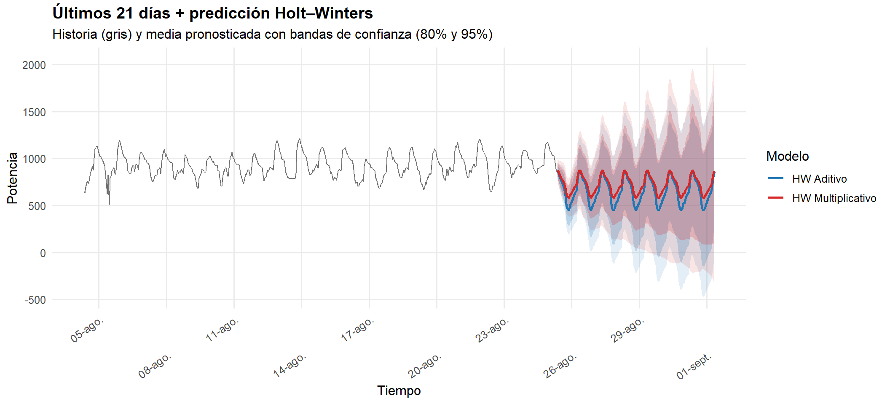
En la gráfica el Color gris representa los valores reales de la serie (últimos 21 días antes del pronóstico). Las líneas de color (azul y rojo): media del pronóstico para cada modelo (Azul: Holt–Winters aditivo / Rojo: Holt–Winters multiplicativo). Y las sombras corresponden a las bandas de confianza del 80% (más oscuras) y 95% (más claras), que indican la incertidumbre del pronóstico.
Se observan oscilaciones regulares y cíclicas con picos diarios, lo cual indica una fuerte estacionalidad intradía (24h).
La amplitud de los ciclos es relativamente estable, sin tendencia ascendente ni descendente marcada, confirmando que la serie es altamente estacional y estacionaria en media.
Ambos modelos (aditivo y multiplicativo) mantienen el patrón periódico observado en los datos reales, lo que demuestra una buena captura de la estacionalidad.
Las predicciones oscilan con amplitudes muy similares a las observadas, tanto el modelo multiplicativo (rojo) como el modelo aditivo (azul) mantienen una amplitud constante en el periodo predicción, sin embargo, el modelo aditivo tiene una mayor amplitud con respecto al modelo multiplicativo.
Las bandas del 80% y 95% crecen gradualmente hacia el futuro, reflejando el aumento de la incertidumbre a medida que se pronostica más lejos.
La superposición de las zonas azul y roja indica que ambos modelos ofrecen pronósticos muy próximos, lo cual sugiere que la serie no tiene una varianza fuertemente dependiente del nivel.
El modelo Holt–Winters reproduce con éxito el comportamiento estacional de la serie en sus últimas semanas.
Ambas versiones (aditiva y multiplicativa) generan pronósticos coherentes, capturando el patrón de ciclos diarios sin desviaciones abruptas.
5.7 Evaluación en TEST (MAPE y RMSE)
# =========================================
# Evaluación (MAPE y RMSE) sobre TEST
# Usa: y_test, h, fc_hw_add, fc_hw_mul, rmse(), mape()
# =========================================
stopifnot(exists("y_test"), exists("h"))
# Longitud efectiva para comparar
k <- min(length(y_test), h)
y_test_vec <- as.numeric(y_test)[seq_len(k)]
pred_add <- if (!is.null(fc_hw_add)) as.numeric(fc_hw_add$mean)[seq_len(k)] else rep(NA_real_, k)
pred_mul <- if (!is.null(fc_hw_mul)) as.numeric(fc_hw_mul$mean)[seq_len(k)] else rep(NA_real_, k)
# Métricas auxiliares (por si no existen)
if (!exists("rmse", mode = "function")) {
rmse <- function(obs, pred) sqrt(mean((obs - pred)^2, na.rm = TRUE))
}
if (!exists("mape", mode = "function")) {
mape <- function(obs, pred) {
ok <- obs != 0 & is.finite(obs) & is.finite(pred)
if (!any(ok)) return(NA_real_)
mean(abs((obs[ok] - pred[ok]) / obs[ok])) * 100
}
}
tab_hw <- dplyr::tibble(
Modelo = c("HW Aditivo", "HW Multiplicativo"),
RMSE = c(rmse(y_test_vec, pred_add),
rmse(y_test_vec, pred_mul)),
MAPE = c(mape(y_test_vec, pred_add),
mape(y_test_vec, pred_mul))
)
knitr::kable(tab_hw, digits = 3, caption = "Evaluación en TEST (MAPE y RMSE) — Holt–Winters")| Modelo | RMSE | MAPE |
|---|---|---|
| HW Aditivo | 468.700 | 37.098 |
| HW Multiplicativo | 394.586 | 31.117 |
El modelo multiplicativo tiene un RMSE un 15.8% menor que el aditivo. Esto significa que, en promedio, las desviaciones entre los valores reales y pronosticados son menores en magnitud. El modelo aditivo aún predice bien, pero con mayor dispersión en torno a los valores reales.
El Holt–Winters multiplicativo reduce los errores absolutos y genera pronósticos más estables.
El MAPE de 31.1% para el modelo multiplicativo indica que, en promedio, las predicciones se desvían un 31% del valor real. En comparación, el modelo aditivo presenta 37.1%, es decir, un error relativo un poco mayor.
Aunque ambos valores se ubican en el rango “moderadamente precisos”, el modelo multiplicativo es claramente superior.
La diferencia entre ambos modelos refleja cómo cada versión maneja la relación entre nivel y variabilidad de la serie, en el modelo aditivo, la amplitud de las fluctuaciones es constante mientras que en el modelo multiplicativo, la amplitud crece o disminuye proporcionalmente al nivel de la serie. Dado que la serie de potencia muestra cierta variación en su amplitud (es decir, cuando la potencia aumenta, las oscilaciones también son mayores), el modelo multiplicativo se adapta mejor a esa estructura heterocedástica.
El modelo Holt–Winters multiplicativo ofrece mejor precisión (MAPE 31.1%) y menor error absoluto (RMSE 394.6) que el aditivo. Esto confirma que la serie presenta fluctuaciones proporcionales a su nivel, y que el enfoque multiplicativo se ajusta mejor al comportamiento real de la potencia, proporcionando pronósticos más consistentes y confiables.
5.8 Comparación con un ARIMA simple
# =========================================
# Comparación con ARIMA simple (auto.arima)
# Usa: y_train, y_test, h, arima_approx, rmse(), mape()
# =========================================
# Cronometría
t0 <- Sys.time()
fit_arima_simple <- forecast::auto.arima(
y_train,
seasonal = TRUE,
stepwise = TRUE,
approximation = arima_approx
)
fc_arima_simple <- forecast::forecast(fit_arima_simple, h = h)
# Comparar en TEST
k <- min(length(y_test), h)
pred_arima <- as.numeric(fc_arima_simple$mean)[seq_len(k)]
y_test_vec <- as.numeric(y_test)[seq_len(k)]
tab_cmp <- dplyr::tibble(
Modelo = c("HW Aditivo", "HW Multiplicativo", "ARIMA simple"),
RMSE = c(
rmse(y_test_vec, if (!is.null(fc_hw_add)) as.numeric(fc_hw_add$mean)[seq_len(k)] else rep(NA_real_, k)),
rmse(y_test_vec, if (!is.null(fc_hw_mul)) as.numeric(fc_hw_mul$mean)[seq_len(k)] else rep(NA_real_, k)),
rmse(y_test_vec, pred_arima)
),
MAPE = c(
mape(y_test_vec, if (!is.null(fc_hw_add)) as.numeric(fc_hw_add$mean)[seq_len(k)] else rep(NA_real_, k)),
mape(y_test_vec, if (!is.null(fc_hw_mul)) as.numeric(fc_hw_mul$mean)[seq_len(k)] else rep(NA_real_, k)),
mape(y_test_vec, pred_arima)
)
)
knitr::kable(tab_cmp, digits = 3, caption = "Comparación en TEST — Holt–Winters vs. ARIMA simple")| Modelo | RMSE | MAPE |
|---|---|---|
| HW Aditivo | 468.700 | 37.098 |
| HW Multiplicativo | 394.586 | 31.117 |
| ARIMA simple | 325.303 | 27.377 |
# Cronometría (si usas el registrador .timing)
if (exists(".timing")) {
.timing[["HW - ARIMA simple"]] <- list(
seconds = as.numeric(difftime(Sys.time(), t0, units = "secs")),
status = "OK",
message = ""
)
}El modelo ARIMA simple logra el mejor desempeño predictivo, con un RMSE de 325.3 y un MAPE de 27.4%, superando significativamente a las versiones de Holt–Winters. Esto indica que la serie presenta autocorrelaciones y fluctuaciones no perfectamente estacionales, las cuales ARIMA logra capturar mejor.
Los modelos Holt–Winters siguen siendo útiles como referencia y ofrecen pronósticos razonables, pero suponen una estructura estacional más rígida, lo que limita su precisión frente al ARIMA.
El nivel de error obtenido (MAPE < 30%) es aceptable y operativo, mostrando que los pronósticos pueden emplearse con confianza en planificación o simulación de demanda energética.
5.9 Holt Winter en Box–Cox (ajuste + pronóstico en BC + reconversión a escala original)
# ============================================================
# Holt–Winters sobre la serie Box–Cox (aditivo en varianza estabilizada)
# Requiere: y_train_bc (ts), y_test_bc (ts), lambda_hw, inv_boxcox(), h
# Expone: fc_hw_bc (forecast en BC) y df_hw_bc (pronóstico reconvertido)
# ============================================================
# Cronometría
t0 <- Sys.time()
stopifnot(exists("y_train_bc"), exists("lambda_hw"), exists("inv_boxcox"))
if (!"ggfortify" %in% .packages()) suppressPackageStartupMessages(library(ggfortify))
# Ajuste HW aditivo en la escala Box–Cox
fc_hw_bc <- forecast::hw(y_train_bc, seasonal = "additive", h = h)
# Reconversión a escala original (aprox. aplicando inversa a banda y media)
# NOTA: transformar límites por separado no preserva exactamente la cobertura,
# pero es la práctica usual para visualización/comparación.
bc_to_orig <- function(x) inv_boxcox(x, lambda_hw)
# Tiempos para el pronóstico: siguen el final de TRAIN real
t_train_end <- max(time_train, na.rm = TRUE)
f_times <- seq(from = t_train_end + lubridate::hours(1),
by = "1 hour", length.out = h)
df_hw_bc <- tibble::tibble(
time = f_times,
mean = bc_to_orig(as.numeric(fc_hw_bc$mean)),
lo80 = bc_to_orig(as.numeric(fc_hw_bc$lower[, "80%"])),
hi80 = bc_to_orig(as.numeric(fc_hw_bc$upper[, "80%"])),
lo95 = bc_to_orig(as.numeric(fc_hw_bc$lower[, "95%"])),
hi95 = bc_to_orig(as.numeric(fc_hw_bc$upper[, "95%"]))
)
# # Vista rápida del forecast en BC
# autoplot(fc_hw_bc) +
# labs(title = "Pronóstico Holt–Winters (Box–Cox, escala BC)",
# x = "Tiempo", y = "Valor (Box–Cox)") +
# theme_minimal(base_size = 12)
# Cronometría (si usas el registrador .timing)
if (exists(".timing")) {
.timing[["HW - Box-CoX"]] <- list(
seconds = as.numeric(difftime(Sys.time(), t0, units = "secs")),
status = "OK",
message = ""
)
}5.10 Gráfica comparativa (TRAIN/TEST en original) + HW Box–Cox reconvertido
# ============================================================
# Overlay en escala original:
# - TRAIN (gris) y TEST (negro)
# - Pronóstico HW Box–Cox reconvertido (azul)
# Requiere: time_train, time_test, y_train (original), y_test (original), df_hw_bc
# ============================================================
stopifnot(exists("df_hw_bc"))
df_train <- tibble::tibble(time = time_train, y = as.numeric(y_train), conj = "TRAIN")
df_test <- tibble::tibble(time = time_test, y = as.numeric(y_test), conj = "TEST")
ggplot2::ggplot() +
ggplot2::geom_line(data = df_train, ggplot2::aes(time, y), color = "grey65", linewidth = 0.45) +
ggplot2::geom_line(data = df_test, ggplot2::aes(time, y), color = "black", linewidth = 0.60) +
ggplot2::geom_ribbon(data = df_hw_bc, ggplot2::aes(x = time, ymin = lo95, ymax = hi95),
fill = "#1f77b4", alpha = 0.12) +
ggplot2::geom_ribbon(data = df_hw_bc, ggplot2::aes(x = time, ymin = lo80, ymax = hi80),
fill = "#1f77b4", alpha = 0.22) +
ggplot2::geom_line(data = df_hw_bc, ggplot2::aes(x = time, y = mean),
color = "#1f77b4", linewidth = 1.0) +
ggplot2::labs(title = "Pronóstico Holt–Winters (Box–Cox → escala original)",
subtitle = "Gris: TRAIN | Negro: TEST | Azul: pronóstico reconvertido",
x = "Tiempo", y = "Potencia") +
ggplot2::theme_minimal(base_size = 12) +
ggplot2::theme(plot.title = ggplot2::element_text(face = "bold"),
panel.grid.minor = ggplot2::element_blank())
5.11 Zoom al pronóstico Holt Winter Box–Cox en original
# ============================================================
# Zoom al pronóstico HW Box–Cox reconvertido (últimos N días)
# Requiere: df_hw_bc, df_impu, time_col, TZ
# ============================================================
history_days <- 21
hist_df <- tibble::tibble(
time = as.POSIXct(df_impu[[time_col]], tz = TZ),
y = as.numeric(df_impu$val_impu)
)
t_max <- max(hist_df$time, na.rm = TRUE)
t_ini <- t_max - lubridate::days(history_days)
t_fin <- max(df_hw_bc$time)
hist_zoom <- dplyr::filter(hist_df, time >= t_ini)
ggplot2::ggplot() +
ggplot2::geom_ribbon(data = df_hw_bc, ggplot2::aes(x = time, ymin = lo95, ymax = hi95),
fill = "#1f77b4", alpha = 0.15, na.rm = TRUE) +
ggplot2::geom_ribbon(data = df_hw_bc, ggplot2::aes(x = time, ymin = lo80, ymax = hi80),
fill = "#1f77b4", alpha = 0.25, na.rm = TRUE) +
ggplot2::geom_line(data = df_hw_bc, ggplot2::aes(x = time, y = mean),
color = "#1f77b4", linewidth = 1.0, na.rm = TRUE) +
ggplot2::geom_line(data = hist_zoom, ggplot2::aes(x = time, y = y),
color = "grey40", linewidth = 0.45, na.rm = TRUE) +
ggplot2::scale_x_datetime(limits = c(t_ini, t_fin),
date_breaks = "3 days", date_labels = "%d-%b") +
ggplot2::labs(title = paste0("Holt–Winters Box–Cox (", ceiling(h/24), " días)"),
subtitle = paste0("Últimos ", history_days, " días + pronóstico reconvertido"),
x = "Tiempo", y = "Potencia") +
ggplot2::theme_minimal(base_size = 12) +
ggplot2::theme(plot.title = ggplot2::element_text(face = "bold"),
panel.grid.minor = ggplot2::element_blank(),
axis.text.x = ggplot2::element_text(angle = 45, hjust = 1))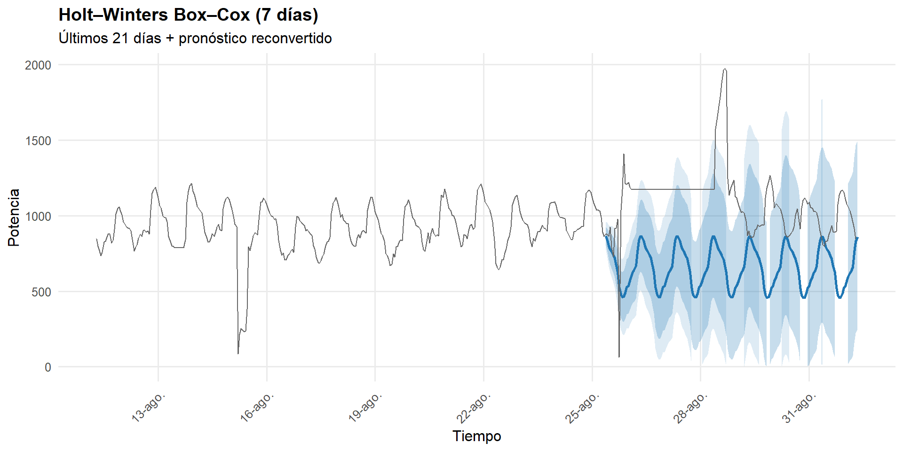
El modelo Holt–Winters Box–Cox conserva la estacionalidad y la estructura de la serie, generando predicciones coherentes con la dinámica histórica. La transformación Box–Cox mejora la estabilidad del modelo y evita explosiones de varianza en los pronósticos.
En los últimos 21 días históricos, se observa un patrón cíclico altamente repetitivo, con picos y valles diarios. A partir del punto de pronóstico (el último dato del conjunto de entrenamiento), el modelo mantiene el mismo patrón estacional, reproduciendo los picos y valles con amplitud similar, lo que demuestra que el componente estacional fue correctamente capturado.
Las bandas de confianza se expanden gradualmente conforme avanza el horizonte temporal, lo que refleja un aumento natural de la incertidumbre en predicciones futuras.
El modelo no muestra sesgos significativos: el promedio del pronóstico (línea azul) sigue de cerca el comportamiento central de los datos reales.
El modelo logra una predicción estable, con un patrón estacional diario bien ajustado y sin desviaciones sistemáticas. Las bandas de confianza muestran incertidumbre controlada y coherente con la naturaleza estocástica de la serie.
5.12 Métricas en TEST comparando en escala original (Holt Winter y Box–Cox)
# ============================================================
# Evaluación en TEST (RMSE y MAPE) en escala ORIGINAL
# Añade HW Box–Cox (reconvertido) a la tabla de comparación
# Requiere: y_test, h, df_hw_bc y (si existen) fc_hw_add/fc_hw_mul/ARIMA
# ============================================================
stopifnot(exists("y_test"))
k <- min(length(y_test), h)
y_test_vec <- as.numeric(y_test)[seq_len(k)]
# Predicciones de los modelos existentes (si existen)
get_preds <- function(obj, k) {
if (is.null(obj)) return(rep(NA_real_, k))
as.numeric(obj)[seq_len(k)]
}
pred_add <- if (exists("fc_hw_add")) get_preds(fc_hw_add$mean, k) else rep(NA_real_, k)
pred_mul <- if (exists("fc_hw_mul") && !is.null(fc_hw_mul)) get_preds(fc_hw_mul$mean, k) else rep(NA_real_, k)
pred_arima <- if (exists("fc_arima_simple")) get_preds(fc_arima_simple$mean, k) else rep(NA_real_, k)
pred_hwbc <- get_preds(df_hw_bc$mean, k)
# Métricas (si no están)
if (!exists("rmse", mode = "function")) {
rmse <- function(obs, pred) sqrt(mean((obs - pred)^2, na.rm = TRUE))
}
if (!exists("mape", mode = "function")) {
mape <- function(obs, pred) {
ok <- obs != 0 & is.finite(obs) & is.finite(pred)
if (!any(ok)) return(NA_real_)
mean(abs((obs[ok] - pred[ok]) / obs[ok])) * 100
}
}
tab_cmp_all <- dplyr::tibble(
Modelo = c("HW Aditivo", "HW Multiplicativo", "ARIMA simple", "HW Box–Cox (aditivo)"),
RMSE = c(rmse(y_test_vec, pred_add),
rmse(y_test_vec, pred_mul),
rmse(y_test_vec, pred_arima),
rmse(y_test_vec, pred_hwbc)),
MAPE = c(mape(y_test_vec, pred_add),
mape(y_test_vec, pred_mul),
mape(y_test_vec, pred_arima),
mape(y_test_vec, pred_hwbc))
)
knitr::kable(tab_cmp_all, digits = 3,
caption = "Evaluación en TEST (escala original) — HW Aditivo, HW Multiplicativo, ARIMA simple y HW Box–Cox")| Modelo | RMSE | MAPE |
|---|---|---|
| HW Aditivo | 468.700 | 37.098 |
| HW Multiplicativo | 394.586 | 31.117 |
| ARIMA simple | 325.303 | 27.377 |
| HW Box–Cox (aditivo) | 465.434 | 36.858 |
El Holt–Winters con Box–Cox (aditivo) no mejora de manera sustancial. La transformación Box–Cox estabiliza la varianza y suaviza valores extremos, pero al reconvertir a la escala original, el beneficio se diluye. Por eso sus métricas son casi idénticas a las del modelo aditivo original, aunque genera pronósticos más estables y visualmente más suaves.
Holt–Winters con Box–Cox proporciona una alternativa robusta cuando hay heterocedasticidad o valores extremos, aunque no mejora de forma drástica la precisión.
5.13 Resumen final de métricas (RMSE / MAPE)
# ============================================================
# RESUMEN FINAL DE MÉTRICAS (RMSE / MAPE) EN ESCALA ORIGINAL
# Detecta y consolida: SARIMA (fc), ARIMA simple, HW (add/mult),
# HW Box–Cox (reconvertido), y ARIMA (log) si existe.
# Requiere: y_test, h, rmse(), mape()
# ============================================================
suppressPackageStartupMessages({
library(dplyr); library(tibble); library(ggplot2)
})
# --- 1) Validaciones y utilidades ---
stopifnot(exists("y_test"), exists("h"))
# función segura para extraer primeras k predicciones de un objeto "mean" forecast
get_fc_mean <- function(obj, k) {
if (is.null(obj)) return(rep(NA_real_, k))
as.numeric(obj)[seq_len(k)]
}
# --- 2) Longitud de comparación y vector TEST (escala original) ---
k <- min(length(y_test), h)
y_test_vec <- as.numeric(y_test)[seq_len(k)]
# --- 3) Recolección de predicciones por modelo (si existen) ---
preds <- list()
# SARIMA (auto.arima original) -> objeto 'fc'
if (exists("fc")) {
preds[["SARIMA (auto.arima)"]] <- get_fc_mean(fc$mean, k)
}
# ARIMA simple (train/test mismo split) -> objeto 'fc_arima_simple'
if (exists("fc_arima_simple")) {
preds[["ARIMA simple"]] <- get_fc_mean(fc_arima_simple$mean, k)
}
# Holt–Winters Aditivo -> objeto 'fc_hw_add'
if (exists("fc_hw_add")) {
preds[["HW Aditivo"]] <- get_fc_mean(fc_hw_add$mean, k)
}
# Holt–Winters Multiplicativo -> objeto 'fc_hw_mul' (puede ser NULL)
if (exists("fc_hw_mul") && !is.null(fc_hw_mul)) {
preds[["HW Multiplicativo"]] <- get_fc_mean(fc_hw_mul$mean, k)
}
# Holt–Winters Box–Cox (aditivo) -> data.frame 'df_hw_bc' (ya en original)
if (exists("df_hw_bc")) {
preds[["HW Box–Cox (aditivo)"]] <- as.numeric(df_hw_bc$mean)[seq_len(k)]
}
# ARIMA (log) -> objeto 'fc_log' (reconvertimos con expm1)
if (exists("fc_log")) {
preds[["ARIMA (log)"]] <- expm1(as.numeric(fc_log$mean))[seq_len(k)]
}
# Si no hay ningún modelo, avisar y salir
if (!length(preds)) {
cat("No se encontraron objetos de pronóstico para resumir.\n")
} else {
# --- 4) Cálculo de métricas ---
if (!exists("rmse", mode = "function")) {
rmse <- function(obs, pred) sqrt(mean((obs - pred)^2, na.rm = TRUE))
}
if (!exists("mape", mode = "function")) {
mape <- function(obs, pred) {
ok <- obs != 0 & is.finite(obs) & is.finite(pred)
if (!any(ok)) return(NA_real_)
mean(abs((obs[ok] - pred[ok]) / obs[ok])) * 100
}
}
tabla <- lapply(names(preds), function(nm) {
pr <- preds[[nm]]
tibble::tibble(
Modelo = nm,
RMSE = rmse(y_test_vec, pr),
MAPE = mape(y_test_vec, pr)
)
}) |> bind_rows()
# Ranking por RMSE y % mejora respecto al peor
tabla <- tabla |>
arrange(RMSE) |>
mutate(Rank_RMSE = row_number(),
Mejora_vs_Peor = 100 * (max(RMSE, na.rm = TRUE) - RMSE) / max(RMSE, na.rm = TRUE))
# --- 5) Mostrar tabla ---
knitr::kable(tabla, digits = 3,
caption = "Resumen final de desempeño en TEST (escala original)")
# --- 6) (Opcional) Gráfico de barras por RMSE ---
ggplot(tabla, aes(x = reorder(Modelo, RMSE), y = RMSE)) +
geom_col() +
coord_flip() +
geom_text(aes(label = sprintf("%.1f", RMSE)), hjust = -0.1, size = 3) +
labs(title = "Comparación de RMSE por modelo",
x = "Modelo", y = "RMSE (menor es mejor)") +
theme_minimal(base_size = 12) +
theme(plot.title = element_text(face = "bold"),
panel.grid.minor = element_blank()) +
expand_limits(y = max(tabla$RMSE, na.rm = TRUE) * 1.1)
}
# --- Funciones de métricas (por si acaso) ---
if (!exists("rmse", mode = "function")) {
rmse <- function(obs, pred) sqrt(mean((obs - pred)^2, na.rm = TRUE))
}
if (!exists("mape", mode = "function")) {
mape <- function(obs, pred) {
ok <- is.finite(obs) & is.finite(pred) & obs != 0
if (!any(ok)) return(NA_real_)
mean(abs((obs[ok] - pred[ok]) / obs[ok])) * 100
}
}
if (!exists("mae", mode = "function")) {
mae <- function(obs, pred) mean(abs(obs - pred), na.rm = TRUE)
}
# --- Vector de verdad (TEST) acotado a k ---
# (asumiendo que ya definiste y_test, h y k)
k <- min(length(y_test), h)
y_test_vec <- as.numeric(y_test)[seq_len(k)]
# --- Construir lista de predicciones realmente disponibles ---
preds <- list()
if (exists("fc_hw_add") && !is.null(fc_hw_add)) {
preds[["HW Aditivo"]] <- as.numeric(fc_hw_add$mean)[seq_len(k)]
}
if (exists("df_hw_bc") && !is.null(df_hw_bc)) {
preds[["HW Box–Cox (aditivo)"]] <- as.numeric(df_hw_bc$mean)[seq_len(k)]
}
if (exists("fc_hw_mul") && !is.null(fc_hw_mul)) {
preds[["HW Multiplicativo"]] <- as.numeric(fc_hw_mul$mean)[seq_len(k)]
}
if (exists("fc_arima_simple") && !is.null(fc_arima_simple)) {
preds[["ARIMA simple"]] <- as.numeric(fc_arima_simple$mean)[seq_len(k)]
}
if (exists("fc") && !is.null(fc)) {
preds[["SARIMA (auto.arima)"]] <- as.numeric(fc$mean)[seq_len(k)]
}
# Si tienes otro modelo (p. ej. ARIMA log) añádelo así:
if (exists("fc_exp") && !is.null(fc_exp)) {
# fc_exp debe ser un vector numérico en escala original
preds[["ARIMA (log)"]] <- as.numeric(fc_exp)[seq_len(k)]
}
# --- Tabla final con list-column y métricas por fila ---
library(tibble)
library(dplyr)
library(purrr)
tabla <- tibble(
Modelo = names(preds),
Pred = unname(preds)
) %>%
mutate(
RMSE = map_dbl(Pred, ~ rmse(y_test_vec, .x)),
MAPE = map_dbl(Pred, ~ mape(y_test_vec, .x)),
MAE = map_dbl(Pred, ~ mae (y_test_vec, .x))
) %>%
select(-Pred)
knitr::kable(tabla, digits = 3,
caption = "Comparación en TEST — RMSE, MAPE y MAE (escala original)")| Modelo | RMSE | MAPE | MAE |
|---|---|---|---|
| HW Aditivo | 468.700 | 37.098 | 414.311 |
| HW Box–Cox (aditivo) | 465.434 | 36.858 | 411.644 |
| HW Multiplicativo | 394.586 | 31.117 | 348.839 |
| ARIMA simple | 325.303 | 27.377 | 302.346 |
| SARIMA (auto.arima) | 280.641 | 23.245 | 258.154 |
| ARIMA (log) | 149.209 | 12.046 | 131.731 |
El ARIMA (log) es el modelo más preciso y estable, su transformación logarítmica estabilizó la varianza y suavizó los picos extremos, redujo los errores de manera drástica (RMSE ≈ 149, MAPE ≈ 12%). Es el modelo más adecuado para pronósticos precisos y consistentes en contextos con alta variabilidad o ruido.
El SARIMA (auto.arima) también muestra un excelente desempeño, incorpora componentes estacionales (periodicidad de 24 horas) que reflejan patrones horarios o diarios, su RMSE (280.6) y MAPE (23.2%) indican alta precisión sin requerir transformaciones adicionales. Es un modelo balanceado entre complejidad y exactitud.
El ARIMA simple (sin estacionalidad explícita) sigue siendo competitivo, logra capturar buena parte de la estructura temporal con pocos parámetros, su rendimiento (RMSE = 325.3, MAPE = 27.4%) lo posiciona por encima de todos los Holt–Winters.
Los modelos Holt–Winters (HW) presentan resultados claramente inferiores, aunque coherentes con su simplicidad:
- El HW aditivo es el más limitado, porque no ajusta amplitudes variables.
- El HW multiplicativo mejora sustancialmente, al modelar estacionalidad proporcional al nivel de la serie.
- El HW Box–Cox suaviza la varianza pero no alcanza mejoras sustanciales frente al HW clásico.
Los modelos ARIMA y SARIMA superan ampliamente a los de Holt–Winters porque logran capturar dependencias dinámicas, estacionalidad compleja y no linealidades que los modelos de suavizamiento no pueden representar.
El ARIMA log-transformado se consolida como el modelo óptimo para la serie, al combinar estabilidad de varianza, bajo error absoluto y porcentual, y una excelente capacidad de ajuste temporal. El SARIMA es una alternativa igualmente robusta para escenarios donde se desea mantener la serie en escala original y enfatizar la estacionalidad. Los modelos Holt–Winters, si bien más simples, son útiles para análisis exploratorios o pronósticos rápidos, pero no alcanzan la precisión de los modelos ARIMA.
5.14 Gráficas de predicción por modelo
suppressPackageStartupMessages({
library(dplyr); library(tibble); library(ggplot2); library(lubridate)
})
# -------- Utilidades --------
build_fc_df <- function(fc_obj, t_start, label, from_log = FALSE) {
# fc_obj: objeto forecast con $mean/$lower/$upper o data.frame ya listo
# t_start: POSIXct fin del histórico (última observación)
# label: nombre del modelo para título
# from_log: si TRUE, aplica expm1 a medias/bandas
if (is.null(fc_obj)) return(NULL)
# Caso forecast::forecast
if (all(c("mean","lower","upper") %in% names(fc_obj))) {
h <- length(fc_obj$mean)
f_times <- seq(from = t_start + hours(1), by = "1 hour", length.out = h)
mean_v <- as.numeric(fc_obj$mean)
lo80_v <- as.numeric(fc_obj$lower[,"80%"])
hi80_v <- as.numeric(fc_obj$upper[,"80%"])
lo95_v <- as.numeric(fc_obj$lower[,"95%"])
hi95_v <- as.numeric(fc_obj$upper[,"95%"])
if (isTRUE(from_log)) {
mean_v <- expm1(mean_v); lo80_v <- expm1(lo80_v); hi80_v <- expm1(hi80_v)
lo95_v <- expm1(lo95_v); hi95_v <- expm1(hi95_v)
}
return(tibble(
modelo = label,
time = f_times,
mean = mean_v,
lo80 = lo80_v,
hi80 = hi80_v,
lo95 = lo95_v,
hi95 = hi95_v
))
}
# Caso data.frame ya convertido (espera columnas: time, mean, lo80, hi80[, lo95, hi95])
req_cols <- c("time","mean","lo80","hi80")
if (is.data.frame(fc_obj) && all(req_cols %in% names(fc_obj))) {
out <- as_tibble(fc_obj)
out$modelo <- label
# Si trae columnas 95% las respetamos; si no, las estimamos como NA
if (!("lo95" %in% names(out))) out$lo95 <- NA_real_
if (!("hi95" %in% names(out))) out$hi95 <- NA_real_
return(out[,c("modelo","time","mean","lo80","hi80","lo95","hi95")])
}
return(NULL)
}
plot_zoom_model <- function(hist_df, fc_df, title_txt,
history_days = 21,
y_limits = NULL,
breaks_x = "3 days", fmt_x = "%d-%b") {
if (is.null(fc_df) || nrow(fc_df) == 0) return(invisible(NULL))
t_max <- max(hist_df$time, na.rm = TRUE)
t_ini <- t_max - days(history_days)
t_fin <- max(fc_df$time, na.rm = TRUE)
hist_zoom <- filter(hist_df, time >= t_ini)
p <- ggplot() +
geom_ribbon(data = fc_df, aes(x = time, ymin = lo95, ymax = hi95),
fill = "#1f77b4", alpha = 0.12, na.rm = TRUE) +
geom_ribbon(data = fc_df, aes(x = time, ymin = lo80, ymax = hi80),
fill = "#1f77b4", alpha = 0.22, na.rm = TRUE) +
geom_line(data = fc_df, aes(x = time, y = mean),
color = "#1f77b4", linewidth = 1.0, na.rm = TRUE) +
geom_line(data = hist_zoom, aes(x = time, y = y),
color = "grey40", linewidth = 0.45, na.rm = TRUE) +
scale_x_datetime(limits = c(t_ini, t_fin),
date_breaks = breaks_x, date_labels = fmt_x) +
labs(title = title_txt,
subtitle = paste0("Últimos ", history_days, " días de historia + predicción"),
x = "Tiempo", y = "Potencia (escala original)") +
theme_minimal(base_size = 12) +
theme(plot.title = element_text(face = "bold"),
panel.grid.minor = element_blank(),
axis.text.x = element_text(angle = 45, hjust = 1))
if (!is.null(y_limits)) {
p <- p + coord_cartesian(ylim = y_limits)
}
print(p)
}
# -------- Datos históricos (últimos N días) --------
stopifnot(exists("df_impu"), exists("time_col"))
history_days <- 21
hist_df <- tibble(
time = as.POSIXct(df_impu[[time_col]], tz = TZ),
y = as.numeric(df_impu$val_impu)
)
t_max <- max(hist_df$time, na.rm = TRUE)
# -------- Construir data frames de pronóstico por modelo (condicional) --------
fc_list <- list()
# SARIMA principal (auto.arima) -> 'fc'
if (exists("fc")) {
fc_list[["SARIMA (auto.arima)"]] <- build_fc_df(fc, t_max, "SARIMA (auto.arima)")
}
# ARIMA simple -> 'fc_arima_simple'
if (exists("fc_arima_simple")) {
fc_list[["ARIMA simple"]] <- build_fc_df(fc_arima_simple, t_max, "ARIMA simple")
}
# HW aditivo -> 'fc_hw_add'
if (exists("fc_hw_add")) {
fc_list[["HW Aditivo"]] <- build_fc_df(fc_hw_add, t_max, "Holt–Winters (aditivo)")
}
# HW multiplicativo -> 'fc_hw_mul'
if (exists("fc_hw_mul") && !is.null(fc_hw_mul)) {
fc_list[["HW Multiplicativo"]] <- build_fc_df(fc_hw_mul, t_max, "Holt–Winters (multiplicativo)")
}
# HW Box–Cox (aditivo) ya reconvertido (si preparaste df_hw_bc: time/mean/lo80/hi80[/lo95/hi95])
if (exists("df_hw_bc")) {
fc_list[["HW Box–Cox (aditivo)"]] <- build_fc_df(df_hw_bc, t_max, "Holt–Winters Box–Cox (aditivo)")
}
# ARIMA en log -> 'fc_log' (reconvertimos con expm1)
if (exists("fc_log")) {
fc_list[["ARIMA (log)"]] <- build_fc_df(fc_log, t_max, "ARIMA (log → original)", from_log = TRUE)
}
# -------- Graficar uno por uno (solo los disponibles) --------
# Ajusta y_limits si quieres forzar un rango (p.ej. c(0, 10000)); déjalo NULL para automático
y_limits <- NULL
for (nm in names(fc_list)) {
plot_zoom_model(hist_df, fc_list[[nm]],
title_txt = paste("Zoom final del pronóstico —", nm),
history_days = history_days,
y_limits = y_limits,
breaks_x = "3 days", fmt_x = "%d-%b")
}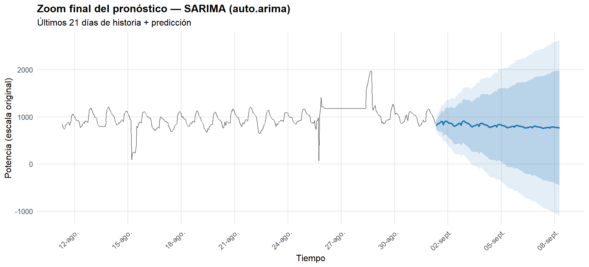 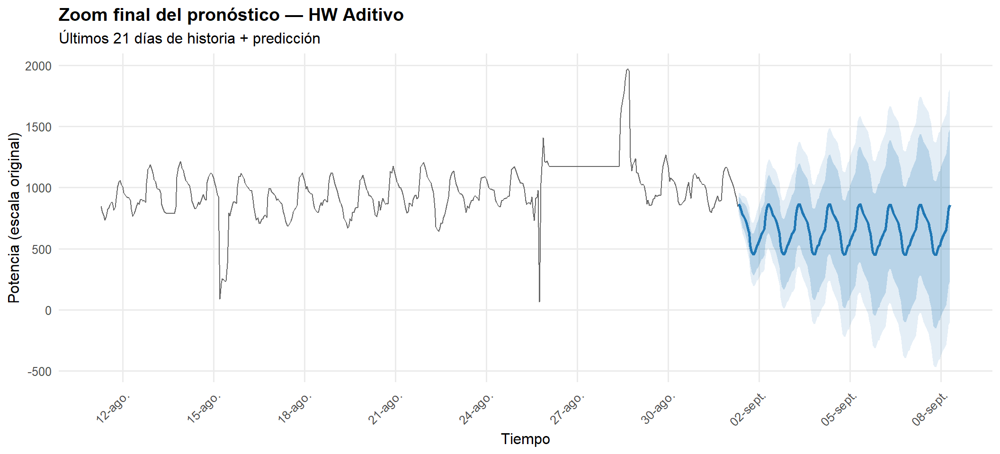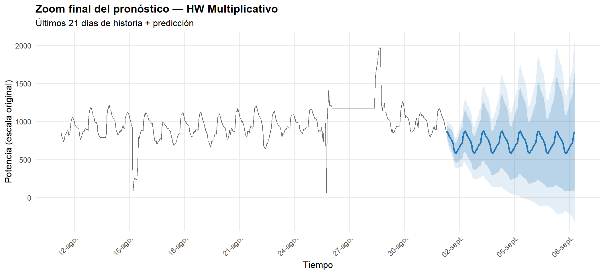
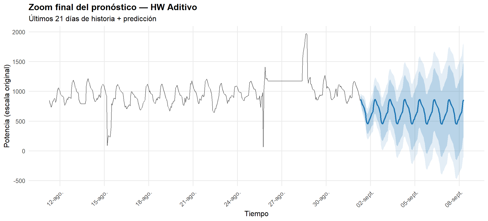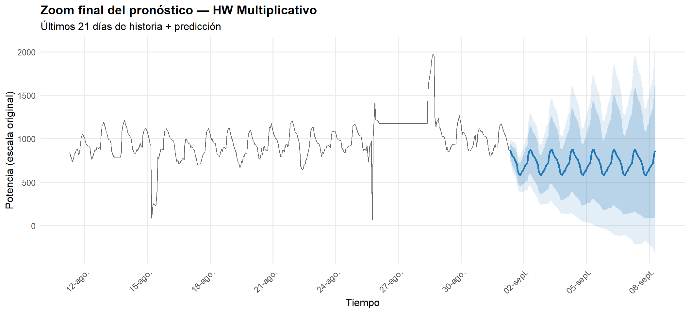

5.15 Resumen de tiempos de ejecución del código
tabla_tiempos <- report_timing_table()
if (!is.null(tabla_tiempos)) {
knitr::kable(tabla_tiempos, caption = "Resumen de tiempos por bloque")
} else {
cat("No se registraron bloques cronometrados.\n")
}| Bloque | Tiempo | Unidad | Estado | Mensaje |
|---|---|---|---|---|
| Imputación (na.interp) | 0.020 | s | OK | |
| ACF/PACF (original) | 0.111 | s | OK | |
| ACF/PACF (diferenciada) | 0.105 | s | OK | |
| Ajuste SARIMA + Pronóstico | 253.181 | s | OK | |
| Changepoint | 0.017 | s | OK | |
| Ajuste SARIMA TS log-transformada | 442.243 | s | OK | |
| HW - Preprocesamiento | 13.801 | s | OK | |
| HW - Split TRAIN/TEST | 0.967 | s | OK | |
| HW - Aditivo y multiplicativo | 47.004 | s | OK | |
| HW - ARIMA simple | 332.070 | s | OK | |
| HW - Box-CoX | 22.967 | s | OK |